Product
Understand each user capability and its visible behavior.
Start the Product path →Document status: Draft for product review.
Last updated: 2026-08-28.
Application-state baseline: Commit 38286cb.
Read the Product path first. Use the other paths when you need interface rules or proof.
Understand each user capability and its visible behavior.
Start the Product path →Inspect graph, Complete, persistence, runtime, and release interfaces.
Start the Contracts path →Review product mocks, status tables, tests, and release proof.
Start the Evidence path →Overall status: Partial. No capability has complete end-to-end product proof. Nine capabilities are partial, and one is open.
Status uses the strongest available product proof. Implemented means code exists. Deterministic product proof exercises the real product without paid inference. Live-provider proof uses the selected provider. Signed-release proof exercises an installed production artifact.
| Capability | Status | Proven now | Next proof |
|---|---|---|---|
| Connect an agent | Partial | Provider setup and restart screenshots | Rejection, expiration, revocation, and a signed authentication smoke |
| Configure execution | Partial | Live model discovery, model families, per-turn selection, and pinned Advanced harness choice | Compatibility failures and a second packaged provider and harness proof |
| Choose work context and permissions | Partial | No-folder creation, saved scope, and product permission profiles | Complete folder, project, Git, and worktree flows |
| Run a task | Partial | Electron creates, accepts, persists, and renders a deterministic graph | Signed live-provider product proof through a supported configuration |
| Control a run | Open | Requirements and state contract only | Stop and retry proof in Relayer Desktop |
| Inspect the result | Partial | Canvas, inspector, breadcrumbs, four-turn history, and read-only Eval replay | Accepted-graph restart replay and accessibility proof |
| Act on the result | Partial | Navigate and one-shot invoke actions use product APIs | Context attachments and complete invoke-state proof |
| Return to saved work | Partial | Thread, graph, receipt, and interrupted-state persistence | Thread management, draft recovery, and visual graph restart proof |
| Evaluate a harness | Partial | Relayer Eval opens product threads in a read-only production workspace and preserves portable traces | Complete immutable promotion bundle and calibrated live comparisons |
| Manage and update the desktop | Partial | Signed Stable update and settings screenshots | Remaining settings, support matrix, corrupt download, and deferral tests |
User goal: Connect a supported agent credential.
Product rule: Relayer keeps the agent connection separate from project selection.
Observable result: The app shows the connection state and available recovery actions.
Acceptance: A new desktop process recognizes the saved connection.
Read connection requirements →User goal: Choose the model for the next interaction.
Product rule: Model is primary. Advanced pins one harness to a new thread.
Observable result: The composer shows the selected family, model, and pinned harness.
Acceptance: Each interaction records its model. Each thread retains its harness.
Read execution requirements →User goal: Work without a folder or inside an authorized project.
Product rule: Git projects offer the local checkout or a Relayer worktree.
Observable result: New Thread shows the selected scope before send.
Acceptance: The interaction records the exact scope selected at send time.
Read context requirements →User goal: Send one interaction to the selected agent.
Product rule: Relayer creates one interaction node and calls Complete once.
Observable result: The app returns an accepted, stopped, or failed state.
Acceptance: An accepted layer matches the persisted graph state.
Read task requirements →User goal: Stop active work or retry an unsuccessful interaction.
Product rule: Running, stopping, stopped, failed, and accepted are explicit states.
Observable result: The composer shows the available control for the current state.
Acceptance: Stop and failure never create an accepted response layer.
Read run-control requirements →User goal: Understand the result and its supporting nodes.
Product rule: The canvas and inspector show the exact accepted layer.
Observable result: The user can inspect nodes, parents, and prior turns.
Acceptance: Saved replay produces the same visible graph state.
Read inspection requirements →User goal: Use a node in the next interaction.
Product rule: Context attachments and authored actions create explicit graph relationships.
Observable result: The composer shows context; authored actions navigate or invoke work.
Acceptance: Each invoked action creates one traceable interaction.
Read action requirements →User goal: Reopen a thread after navigation or restart.
Product rule: Relayer persists accepted state and explicit interrupted states.
Observable result: Saved threads reopen from Chats or Projects.
Acceptance: Restart preserves the last accepted graph without corruption.
Read persistence requirements →User goal: Judge a pinned harness with repeatable evidence.
Product rule: Versioned evaluations produce immutable results and replay data.
Observable result: A report can open its saved result in Relayer Desktop.
Acceptance: Promotion requires automated checks and human visual review.
Read evaluation requirements →User goal: Change settings and install a trusted update.
Product rule: Settings remain local; releases are signed and verified.
Observable result: The app shows settings and explicit update states.
Acceptance: An update preserves supported product data and settings.
Read desktop-management requirements →This PRD specifies two product packages. Both packages are in the relayer-graphcomplete repository. They ship together as one Relayer product.
complete(inputGraph), harness host, supported implementations, graph tools, and evaluation suites.The repository is a monorepo. Relayer Desktop and Relayer Harness have separate package and runtime boundaries. V1 does not put them in separate repositories.
V1 does not include a general harness desktop, arbitrary harness plug-ins, or a custom conversation-view framework. These items are deferred. The Relayer product must first show that a reusable interface is stable.
The Product capabilities come first. Contracts follow the product behavior. Evidence and acceptance appear last.
The delivered product is Relayer Desktop with its pinned Relayer Harness. A user connects an agent credential and creates a thread. The thread can use no folder or a project. For a Git project, the user can select the local checkout or a new worktree.
Relayer has a harness- and provider-agnostic product contract. Product workflows use stable catalog identifiers and the same Complete boundary. A supported harness or provider still requires an explicit adapter, declared compatibility, tests, and release inclusion.
The user sends interactions and can stop or retry the work. The user can navigate accepted history and reopen saved threads. The user can also install desktop updates.
Each accepted Complete call saves a graph response. Relayer Desktop shows the returned layer as movable nodes. Each node has an icon and a title. The right inspector shows the selected node details and actions. The user can navigate to prior nodes or attach them to a later message.
A harness build can ship only after all required checks pass. These checks include deterministic tests, live evaluations, saved-result replay, and human visual review.
This PRD uses the terms in this table. It does not use a different term for the same concept.
| Term | Meaning |
|---|---|
| Relayer | The product that includes Relayer Desktop and Relayer Harness. |
| Relayer Desktop | The local application that owns user workflows, product data, and delivery. |
| Relayer Harness | The package group that contains the graph runtime, harness host, and evaluations. |
| Harness configuration | A named, versioned execution setup pinned to a thread. It selects one supported implementation. |
| Provider adapter | The implementation boundary for authentication, model discovery, credentials, and provider-specific execution details. |
| Thread | A saved graph of completions in Relayer Desktop. Its identity and context do not depend on one provider conversation or session. |
| Interaction | One user event that calls Complete. A message or an authored node action can be an interaction. |
| Complete | The operation complete(inputGraph). It immediately returns a completion handle whose result promise settles from durable GraphComplete state. |
| Accepted layer | The exact response layer that passed graph validation and acceptance. |
| Project | A stable Relayer record for an authorized local folder. |
| No-folder chat | A thread that uses an isolated app-owned directory. The UI label is No folder. |
| Evaluation | A versioned test of a pinned harness build and source. |
flowchart LR
A["Connect agent login"] --> B["Open New thread"]
B --> C{"Choose scope"}
C -->|No folder| D["App-owned local workspace"]
C -->|Project| E["Folder plus optional Git worktree"]
D --> F["Create one user-interaction node"]
E --> F
F --> G["Call complete(inputGraph)"]
G --> H["Harness constructs response through graph tools"]
H --> I["graph.submit interaction validates and accepts reachable response"]
I --> J["Return resolved root layer and render it immediately"]
J --> K{"Next user move"}
K -->|Message| F
K -->|Authored node action| F
K -->|Add nodes as context| F
K -->|Navigate history or graph| J
flowchart LR
subgraph REPO["relayer-graphcomplete repository"]
subgraph CORE["GraphComplete runtime — built and evaluated together"]
GE["Rust graph core"]
GA["Local Rust graph API"]
CL["TypeScript and Python graph clients"]
HH["Persistent Node harness host"]
HI["Supported harness implementations"]
PA["Provider adapters"]
ER["Evaluation runner"]
end
subgraph PRODUCT["Relayer product host — built with desktop work"]
AS["Rust Relayer app server"]
UI["Electron shell and graph interface"]
end
end
GE --> GA
CL --> GA
HI --> CL
PA --> HI
HH --> HI
ER --> HH
ER --> GA
AS --> GE
AS --> HH
UI --> AS
Relayer Desktop owns the user-facing product:
It does not implement agent recursion, decide graph semantics, or own Complete prompts and evaluation rubrics. It renders and interacts with graph state only through the graph engine's stable product APIs.
The GraphComplete runtime owns the graph and harness contract:
These runtime components are implemented and evaluated together. They remain separate packages. The graph engine is authoritative. Clients must not open its database directly. The harness host must not implement graph rules. The evaluation runner must not contain a second product or Complete implementation.
The Rust app server creates product interactions and calls the same persistent Node harness host used by evaluation. It persists the accepted result and serves it to the renderer.
The canonical external boundary is one Complete call. inputGraph is a small pointer. Its root is one already-prepared canonical user-interaction node. It is not a serialized copy of the project graph. Human-root product code prepares that interaction from the user event. Trusted recursive adapter code prepares or exactly recovers an agent child from one immutable published invoke occurrence. Both paths then enter the same Complete module. Model-authored code cannot substitute an arbitrary interaction-shaped node or mint child authority.
The root package exports this boundary and a process-owned configuration seam for injecting its trusted completion runtime. The Rust app server reaches the same executable seam through the persistent HarnessHost.
interface RelayerHarnessClient {
complete(inputGraph: { interactionNode: NodeReference }): CompletionHandle;
}
interface CompletionHandle {
readonly completionId: GraphId;
readonly current: CompletionCurrent;
readonly result: Promise<ResolvedGraphLayer>;
}
interface CompletionCurrent {
snapshot(): Promise<CompletionCurrentSnapshot>;
}
interface CompletionTerminalError extends Error {
readonly completionId: GraphId;
readonly lifecycle: "stopped" | "failed";
readonly current: CompletionCurrentSnapshot;
readonly reason: string;
}
Complete returns one handle after trusted preparation establishes or recovers the canonical completion identity.
Preparation is a separate step, and it is the authority step. Agent code publishes an accepted invoke action, calls prepareComplete(action), then calls Complete.
complete(inputGraph) establishes no identity of its own. It requires an already-prepared interactionNode and rejects anything else.
Server-side capability derives from the published invoke occurrence. Exact-retry recovery keys off that same occurrence.
current observes the durable GraphComplete pointer. result resolves only from GraphComplete succeeded state and its canonical final layer.
A model turn or provider process ending does not resolve it. Stopped and failed completions retain their last current and reject result with a structured terminal error. They never fabricate a final layer.
A never-settling promise is not the contract. An awaiting agent must be able to observe child termination.
The parent's own invoke action stays unresolved and navigable to the child's retained current. An unresolved invoke never means an unsettled handle.
An agent may stop a completion whose invocation names it as the direct source. Grandchildren, siblings, and human or product callers may not.
handle.stop(reason) is that agent-only control. The stopped child retains its current and reports stopped.
Observation is delivered as current-pointer revisions only. There is no token streaming, no partial-layer publication, and no additional event kind.
An awaiting agent performs no repeated polling. The server holds one observation open and answers when the awaited completion advances, filtered to that caller's grant.
Restart never reattaches. Interrupted active completions fail safely with application_restart and keep their retained current.
No provider is asked whether its execution survived. Complete is never re-called as crash recovery for an already-started execution.
The app server creates the human-root interaction and passes its pointer to Complete. A supported recursive provider adapter derives the prepared pointer from the invoking completion and exact published invoke occurrence. It then passes that same pointer to Complete. The selected harness uses its bound graph client to construct nodes, edges, layers, and actions, then returns with current.return(layer) or the compatible graph.submit(interactionNode). The accepted result includes the fully resolved first layer so the desktop can display it immediately without a second request. The graph engine persists the same layer and serves later navigation. A model turn ending without Return is failure, never success.
The product stores one named harness on the thread. Model is the primary composer choice. Advanced shows compatible harness configurations before thread creation. The pinned harness becomes read-only after creation.
The selected harness owns model execution and provider-session reuse. Each explicitly supported recursive adapter, including Codex and Prime Agent, owns its provider-native child launch or binding, concurrency, waiting, messaging, and session behavior. GraphComplete, Relayer product, and the harness host do not add a recursive runnable queue, automatic parent wakeup, or incorporation policy. Provider adapters own authentication and model discovery. Relayer product records do not expose raw credentials, provider flags, runtime sessions, or implementation-specific recursion policy.
V1 does not include arbitrary harness adapters, third-party conversation views, a generic agent protocol, or a public multi-harness conformance kit. Eval may compare supported harness, provider, and model configurations, but every run still exercises the Relayer product contract. A general platform should be reconsidered only after repeated implementations reveal a concrete reusable seam.
The walkthrough is the current product mock. Each scenario must correspond to a requirements subsection directly beneath it in the rendered review site. The optional annotation overlay is review tooling, not product chrome.
| Mock | Product decision shown | Contract or implementation it proves |
|---|---|---|
| Agent setup: Codex | Agent login is the primary setup; harness choice is collapsed under Advanced | Provider-independent configuration plus Codex managed login |
| Agent setup: API key | API key reveals provider, secure key entry, and optional provider API URL | Extensible provider credentials without creating a Relayer account |
| New no-folder chat | A chat can start without a project or user folder | User-facing “No folder” choice backed by scope.kind = standalone and an isolated app-owned workspace |
| New project thread | Folder choice lives in New thread, not onboarding | Project creation is inline with the first task |
| Git execution options | Git-only checkout and worktree choices are advanced, contextual options | Non-Git folders remain simple; Git state is not mandatory |
| Graph thread | The accepted opened layer is a force graph with node details on the right | Exact display contract and local graph navigation |
| Add graph context | A selected node can be attached with an optional annotation | Context attachment schema and next Complete request |
| Node action and child thread | Authored actions can navigate or create recursively enterable subthreads | Action invocation contract and recursive graph/thread model |
| Settings | Normal settings are simple; advanced diagnostics remain collapsed | Provider, storage, Git, update, and developer-diagnostic boundaries |
| Desktop update | Signed update is visible, deferrable, and restartable | Required V1 distribution, promotion, withdrawal, and forward-repair behavior |
| Eval runner | A developer chooses a case, exact harness/model/judge manifests, runs it, and sees progress plus result actions | Relayer eval runner and Relayer Harness evaluation contract |
| Eval report | A completed execution exposes Product workspace, Judge review, and Candidate trace | Relayer Eval result actions and evidence contract |
| Evaluation thread | The exact graph result opens in a read-only production workspace | Server-enforced review authority and product-real replay |
Every user-visible requirement needs structural UI assertions plus a rendered screenshot or saved-result replay in this UX. Schema validation alone does not satisfy visual acceptance.
This table records the first desktop slice at its original evidence boundary. It is not the current capability tracker. Later sections record execution, graph, navigation, Eval, and release proof.
At that checkpoint, Slice 1 did not verify the complete project, Git, agent-execution, or graph-interaction flows.
These labels describe the historical Slice 1 checkpoint. Use the overview tracker for current status.
| Product requirement | Status | What is proven now | What remains |
|---|---|---|---|
| Codex provider setup: normal and abandoned-auth flows | Verified | Disconnected, authorization-pending with Open again, successful connection, and connected restart are covered by one compact lifecycle scenario and four Electron screenshots in Section 15A. | Explicit rejection, expiration, and later credential revocation are tracked separately below; real authentication needs a signed-release smoke. |
| Desktop shell and appearance | Verified | Light and dark provider setup, Relayer branding, expanded shell, and the collapsed-sidebar layout are structurally tested and visually captured. | Keyboard navigation, accessibility, small-window layout, and restart persistence remain broader desktop requirements. |
| Full-page Settings surface | Partial | Full-page layout, theme selector, connected Codex row, Disconnect control, channel selector, and update control are structurally tested and captured in SET-001-E1. |
Disconnect/reconnect behavior and retention of local data are not verified. Advanced project, storage, Git, and provider settings are not built. |
| New Thread entry and scope menu | Partial | The connected landing page, composer, explicit No folder state, and Open another folder choice are structurally tested and captured in SCP-001-E1 and SCP-001-E2. |
Folder picker completion, project creation/selection, Git detection, and local-checkout/new-worktree choice need choice-driven product tests and screenshots. |
| Create and persist the first thread | Verified | The Electron desktop creates a No folder thread through the Rust app server. It lists the thread in Chats. After a process restart, it restores the title, scope, and first interaction. APP-001-E1 and APP-001-E2 show these states. The Rust integration test proves that the database reopens. |
Project-backed visual proof, unsent-draft recovery, rename/archive/pin/delete, and interrupted-write recovery remain separate requirements. |
| Provider failure edges | Open | Abandoned authorization and rapid replacement are covered. | Add compact coverage for explicit authorization rejection, credential expiration/revocation on a later launch, and recovery without freezing the setup page. |
| Desktop updater and distributable packaging | Partial — Stable verified | The protected CI workflow signed, notarized, and published immutable Apple Silicon releases. The releases are 0.2.2, 0.2.3, and 0.2.4. A remote Mac mini completed the visible updates through 0.2.4. Workflow 32105585844 promoted the exact Preview bytes to Stable. The installed app used the live Stable feed and showed Up to date. |
The macOS 13.3-through-current support matrix, corrupt hosted artifact behavior, and update deferral around active Complete commits remain unverified. Automatic application downgrade is prohibited. A failed later-version SQLite migration is a separate persistence-recovery requirement, not an updater rollback mechanism. Section 15C.2 contains the exact proof and remaining boundary. |
| Relayer login and additional providers | Deferred | Future product requirements remain documented. | Relayer account login, API-key login, additional providers, custom URLs, secure key storage, connection tests, and model listing are outside Slice 1. |
| Harness execution, graph output, and graph interactions | Deferred | Experimental harness, graph, and eval work is separate engineering evidence and is not counted as desktop proof. | Invocation, stop/retry, accepted graph rendering, node details, context attachment, actions, subthreads, turns, and graph persistence belong to later slices. |
This table records the original app-server foundation PR. It explains the evidence images below. It does not override the current app-server, runtime, persistence, or renderer status.
| Requirement | Status | Evidence in this PR | Remaining work |
|---|---|---|---|
| Electron owns the Rust app-server lifecycle | Met | One Electron main process owns the desktop profile, Rust server, provider process, updater, and settings. A later Relayer process asks the primary process to restore and focus its window. The later process then exits. This also applies before the first window opens. The primary process restricts access to the product-data directory. It starts one bundled or development server. It sends the control token through child standard input. The token is not in the process arguments. The open pipe is the parent-ownership signal. The process accepts only its authenticated loopback readiness message. It stops the server during shutdown. The Rust server also exits when this pipe closes. Startup failure and normal shutdown wait for process exit. After a limited grace period, shutdown changes from SIGTERM to SIGKILL. If the child exits unexpectedly, the desktop shows an actionable error and closes. Automated tests cover process focus, private storage, provider-spawn failure, and parent-pipe exit. |
Release signing and a clean-machine packaged smoke belong to distribution validation. |
| App-server responsibilities have explicit production boundaries | Met | RelayerAppServer has four layers: server lifecycle, HTTP API, product service, and SQLite storage. HTTP handlers own authentication and wire formats. The product service owns typed IDs, validation, and product operations. SQLite storage owns SQL, transactions, connection policy, and migrations. The public Rust library exposes only the server interface that the executable and integration test need. |
Graph core, harness hosting, credential propagation, and their integration boundaries remain intentionally absent. Split the product layer by feature only when additional product areas make the current project/thread service too broad. |
| PR #4 remains independent from graph core and the harness | Met | The product-state response exposes projects, threads, and interactions chronology with graph: false and harness: false. It does not synthesize nodes, edges, status, or a second graph-node identifier. |
A later integration PR will have graph core create the canonical user-interaction node with the same integer identity inside the app server's SQLite transaction. |
| Product SQLite stores project metadata and atomically creates a thread with its first chronology entry | Met | One Rust integration test creates a project and two types of thread. It tests duplicate project creation and concurrent interaction writes. It also tests future and equal thread timestamps. The test closes the store, reopens the database, and reads the same records. It proves one project winner, contiguous sequence numbers, nondecreasing timestamps, deterministic thread selection, and positive integer IDs. Thread creation and the first interaction use one transaction. The app server permits only SQLx-managed predecessor schemas. It then validates columns, unique indexes, foreign keys, and the required root interaction. | Canonical graph nodes, graph snapshots, attempts, drafts, later schema upgrades beyond the initial version, export, and recovery from an operating-system interruption are not represented yet. |
SCP-001: first send requires non-empty text and creates a desktop-owned thread |
Met | The send control is disabled for empty input. A valid send creates the thread and first product interaction chronology record through the Rust API without invoking a harness or synthesizing a graph node. Repeated click or keyboard submission while that request is pending is coalesced into one creation. | Project-scope validity will need additional UI rules when project selection is completed. |
| Create, persist, and reopen the first No folder thread | Met | APP-001-E1 shows the created thread. APP-001-E2 shows the same isolated profile after Electron and the app server were stopped and restarted. The database integration scenario supplies the automated persistence proof. |
Unsent drafts and interrupted-write recovery are not proven. |
SCP-002: No folder is a standalone scope |
Partially met | The stored thread has no projectId, and the desktop displays it under Chats with No folder. |
The required isolated app-owned working directory is not created yet. |
SCP-003: project identity and duplicate-folder behavior |
Partially met | Projects receive stable IDs and canonical folder paths. Concurrent creation of the same canonical folder has one atomic winner; later attempts return a conflict instead of an internal error. The desktop asks before explicitly reusing the existing project. Missing folders return an actionable error. | The folder picker, visible confirmation/recovery proof, authorized-folder lifecycle, and populated project sidebar are not complete. |
SCP-004–SCP-006: Git and worktree choices |
Not met | No Git or worktree behavior is claimed by this PR. | Add Git detection, Local checkout/New worktree choice, failure recovery, and exact execution-location persistence. |
SCP-007–SCP-009: thread management |
Partially met | Create, list, select, and reopen are present for the initial thread shape. | Fork, rename, archive, pin, delete-entry, move-to-project, and graph-reference preservation are not implemented. |
| Section 8.2 local persistence and restart recovery | Partially met | Projects, threads, and product interaction text use local SQLite storage and survive a real process restart. Thread plus first interaction creation is transactional; concurrent later interactions serialize sequence allocation. The initial product schema is installed and structurally validated by versioned migration code owned by SQLite storage, and incompatible pre-existing tables prevent startup. | Settings, credential references, graph data, accepted states, execution state, update state, a real later-version migration, and crash recovery remain. |
| Packaged local app-server artifact | Met | The development and release commands compile the Rust server for aarch64-apple-darwin. They package Electron for arm64. An afterPack check rejects a nested server with any other architecture. Signed verification repeats this check. APP-001-E3 is a launch smoke of the packaged .app with an isolated profile. |
Intel Mac support is explicitly deferred. Signing, notarization, clean-machine installation, update feed, and previous-version upgrade remain release work. |
| Credentials, harness invocation, graph engine, and response graph | Out of scope | The desktop explicitly says agent execution is not connected. This PR neither starts Prime Agent nor claims graph behavior. | Integrate these only through their later product contracts. |
APP-001-E1 — first standalone thread createdCaptured from the unsigned packaged Relayer Dev.app using an isolated product profile. The existing Codex connection was used only to pass the current provider gate; no harness was started.
APP-001-E2 — same thread reopened after restartCaptured after stopping both Electron and its Rust app server, then launching them again against the same isolated profile. The title, No folder scope, sidebar entry, and first interaction were restored from product SQLite.
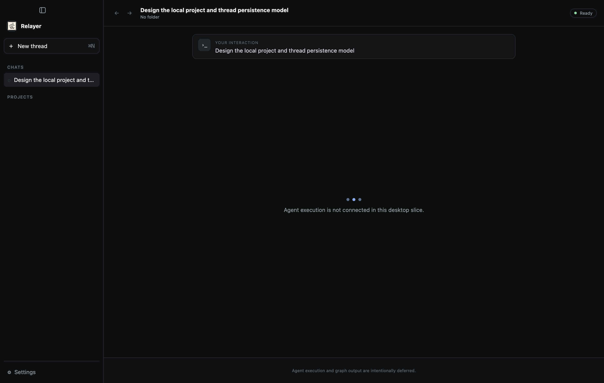
1 2 3 4APP-001-E3 — packaged arm64 application starts its bundled serverCaptured from the unsigned local Relayer Dev.app produced by npm run desktop:pack, using an isolated empty profile. The page origin was the ephemeral loopback address reported by the bundled Rust executable.
 1
2
1
2
User goal: Connect a supported agent credential.
Product rule: Agent setup stays separate from work-context selection.
Observable result: Relayer shows the connection state and available recovery actions.
Acceptance: A new desktop process recognizes the saved connection.
Relayer uses one implicit local profile. First launch opens Agent setup and, after a valid configuration is saved, opens the normal New thread window. An optional Relayer account offer may appear only after that local workspace is usable. Folder, project, and account choice are not blocking onboarding steps.
The setup surface is one focused Agent login card. Codex and API key are presented as horizontal login-method choices, followed by the credential and model controls for the selected method. The form should not split setup into equal Harness and Agent login columns or stack alternative methods into a long vertical option list.
Agent setup does not require a harness choice. After connection, the New Thread composer presents Model as the primary execution control. Its Advanced tab contains compatible harness configurations.
A successful provider connection with at least one execution-eligible model creates one product-managed, provider-scoped model family before setup completes. First launch selects the unique valid provider, family, model, and default harness route atomically; it does not require custom-family construction. Product policy admits only reviewed synchronous text or agent models and fails closed for unknown capabilities. It applies a versioned provider preference before provider order and caps the managed family at five models. OpenRouter policy version 1 is the explicit three-model general-agent roster deepseek/deepseek-v4-pro-0813, qwen/qwen3.8-max, and z-ai/glm-5.3, in that order. Vercel AI Gateway policy version 1 provides the equivalent roster using its catalog identities: deepseek/deepseek-v4-pro-0813, alibaba/qwen3.8-max, and zai/glm-5.3. Both policies omit missing or unavailable entries rather than falling through to arbitrary catalog order.
Adding a provider through Settings applies the same managed-family policy. It preserves the existing default provider, family, model, harness, open composer draft, and existing thread bindings. Refresh reconciles only the refreshed provider's managed family. Custom families are never rewritten by managed-family reconciliation. A connected provider with zero eligible models remains in the typed provider_no_eligible_execution_models recovery state and cannot silently populate an unsafe family. Its provider card and first-run setup expose an exact-provider Refresh models and set up defaults action. Refresh reruns managed-family derivation for that same provider and advances automatically when a valid default route becomes available.
The packaged application includes codex-basic as its Codex product harness. codex-basic-high remains available only to internal Eval and code workflows. Prime Agent configurations remain development targets until a clean installation can load the upstream package.
Connect Codex starts the managed ChatGPT/Codex browser authentication flow.Other reveals a required provider name and API base URL.Test connection action verifies authentication and model listing without invoking Complete.The Relayer account is separate from every agent-provider credential. Stable and Preview open the branded app.relayerlabs.ai/desktop/login launcher and authenticate directly with the Auth0 Native Application using Authorization Code and PKCE. No Relayer authentication API, custom desktop session, database row, or Relayer user UUID participates.
Electron main owns state and PKCE generation, loopback binding, callback validation, direct token operations, OIDC verification, encrypted refresh-token custody, and account generation. Stable can bind only ports 49152 through 49154. Preview can bind only ports 49155 through 49157. The renderer receives only a closed presentation state, the selected channel, a pseudonymous subject where useful, and safe reason codes.
Electron main is the only Sentry authority. Renderer and child processes submit typed records through generation-bound local capabilities.
Only a verified account generation enables admission. Every other account state creates no request or queue record.
Main derives one stable identifier with SHA-256("graphcomplete-sentry-user-v1\0" || UTF-8(Auth0 sub)). Callers cannot supply identity or transport configuration.
The encrypted queue holds at most 32 records and 256 KiB. Records expire after seven days, and overflow evicts the oldest record.
Any corrupt queue is deleted. Retry requires revalidation of the same Auth0 subject and never creates recursive telemetry.
Logout or account replacement disables admission and deletes the old queue before account presentation changes.
Release identity comes only from immutable sealed package metadata. Electron main supplies the Sentry environment from its validated current update channel.
The versioned shared privacy corpus covers every process seam and forbidden field. npm run evidence:telemetry runs its deterministic portfolio.
Live Auth0, packaged storage, system-browser, upload, and symbolication proof runs only for Preview or Stable release candidates.
Each target proves only its native platform: macOS Apple Silicon, macOS Intel, or Windows x64. Missing target evidence remains indeterminate.
type AgentConfiguration = {
harnessId: string;
harnessVersion: string;
loginMethod: "codex" | "api-key";
providerId: string;
providerApiUrl?: string;
credentialRef: string;
modelId: string;
};
type ThreadAgentBinding = {
threadRootNodeId: number;
harnessId: string;
harnessVersion: string;
};
type InteractionModelBinding = {
nodeId: number;
providerId: string;
credentialRef: string;
modelId: string;
};
The harness binding is written when the thread's root interaction is created and is inherited by every interaction in that thread. The model picker remains available in the composer and may change before any interaction. Every submitted interaction records the exact provider, credential reference, and model used for that call.
Other requires provider name and a valid HTTPS API URL, except explicitly permitted local development URLs in developer mode.Deterministic UI tests cover each selector transition, conditional field, validation error, and disabled state. They also cover secure storage and secret removal. Credential-adapter integration tests use fake Codex and provider servers.
| Optional-account checkpoint | Deterministic proof |
|---|---|
ACC-001 and ACC-003 | test/desktop-account-session.test.mjs drives local fake Auth0 token and JWKS endpoints, PKCE exchange, claim rejection, refresh, and revocation. Production Auth0 is never contacted. |
ACC-002 | The same suite occupies callback ports, switches Stable and Preview pools, races concurrent controls, and verifies exact callback failure and listener closure. |
ACC-004 and ACC-006 | Generation tests cover unverifiable restart, logout ordering, stale exchange completion, and a paused credential commit followed by deletion. |
ACC-005, ACC-007, and ACC-008 | test/desktop-account-ui.test.mjs verifies the startup gate, direct account control, minimal settings, action coalescing, and contained failures. |
| Telemetry checkpoint | Deterministic proof |
|---|---|
TEL-001, TEL-002, and TEL-006 | desktop-authenticated-error-startup, desktop-rust-error-capabilities, and account-session fixtures exercise bootstrap, live child refresh, logout, replacement, verified, uncertain, stale, and restarted generations without live Auth0. |
TEL-003 and TEL-005 | The shared privacy corpus, renderer reporting, and stack-sanitizer suites cross every seam. They reject every forbidden field, absolute or third-party frame, oversized frame set, and extra key. |
TEL-004 and TEL-011 | desktop-error-domain-adapters drives all five production adapters. Expected states, reporting rejection, and transport failure produce no product behavior change. |
TEL-007, TEL-008, and TEL-009 | Queue tests cover size, count, age, eviction, corruption, same-subject retry, logout, replacement, and recursion suppression. |
TEL-010 | Release and telemetry-artifact fixtures reject caller identity, mismatched metadata, source bytes, native debug IDs, targets, and authority outside release CI. Main projects validated Development, Preview, or Stable environment. |
TEL-012 | npm run evidence:telemetry first runs the named adapter, service-protocol, and shared Rust suites. It then runs the versioned zero-inference loopback privacy portfolio and emits reviewable evidence. |
The default portfolio uses no paid inference, production Auth0, Relayer API, or live Sentry.
The default portfolio does not induce a panic in a spawned production Rust binary. That remains explicit in its evidence limitations.
Live authentication and packaged symbol proof run only for Preview or Stable release candidates. Each target proves only its own platform.
PROV-001 is one product requirement with several observable subrequirements, not a collection of independent setup features:
| Requirement | Sprint 1 status | Automated proof | Visual proof | Remaining work |
|---|---|---|---|---|
PROV-001 Provider setup and its Codex subrequirements |
Verified | test/desktop-shell.test.mjs has one structural desktop scenario and one provider-lifecycle scenario. The lifecycle scenario covers disconnected account read, two rapid Connect calls, cancellation-before-replacement, completion notification, connected account read, request timeout, and app-server interruption. |
PROV-001-E1 through PROV-001-E4 below |
Explicit rejected, expired, and revoked-credential behavior; signed-release real-auth smoke. API keys, additional providers, provider URLs, and secure secret storage remain planned. |
The default validation command remains inference-free. On 2026-08-21, npm run check passed 317 Vitest tests, 72 Rust tests, and 12 Python tests. Only relevant product scenarios count as provider proof.
PROV-001-E1 — disconnected provider setup, dark appearanceCaptured from the Electron development application with an isolated empty Relayer profile. This proves the full-page setup, Relayer branding, Codex as the first provider, and the initial Connect action.
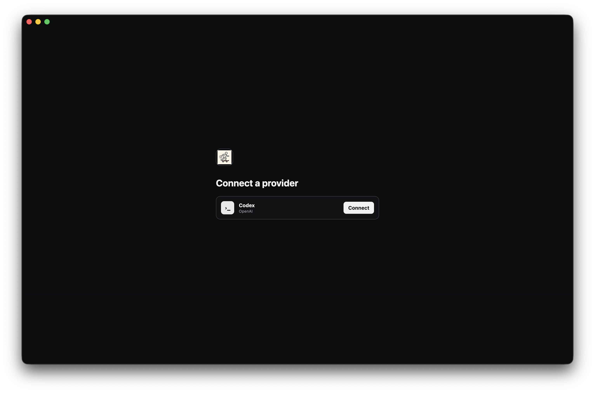
1 2 3PROV-001-E2 — disconnected provider setup, light appearanceCaptured from the same Electron application and isolated profile after persisting the light appearance. This proves that provider setup participates in the desktop appearance setting.
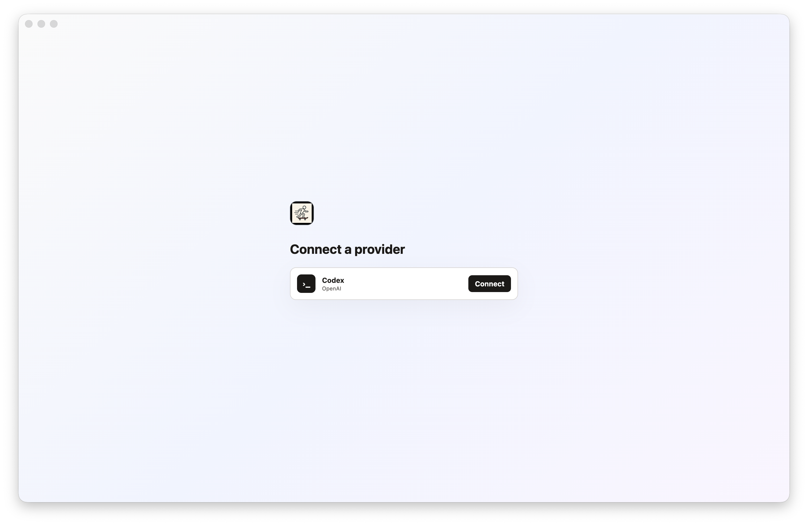
1 2 3PROV-001-E3 — authorization pending and recoverableCaptured after starting the real hosted Codex authorization flow. The desktop remains actionable and exposes Open again; the compact lifecycle test proves that selecting it cancels the previous login ID before starting its replacement.
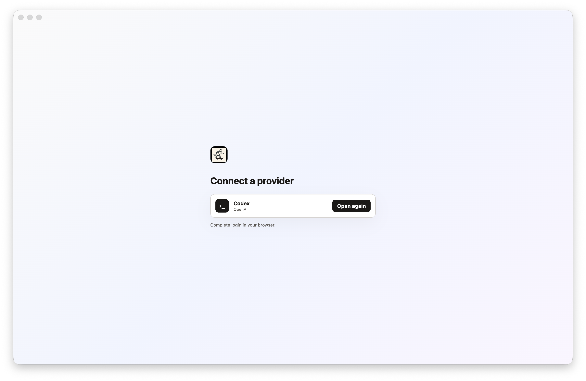
1 2PROV-001-E4 — connected account recognized by a new desktop processCaptured from a newly launched Electron development process using the existing Relayer-scoped Codex profile. It bypasses provider setup and opens the normal New Thread surface. The image proves startup presentation, not agent invocation or graph behavior.
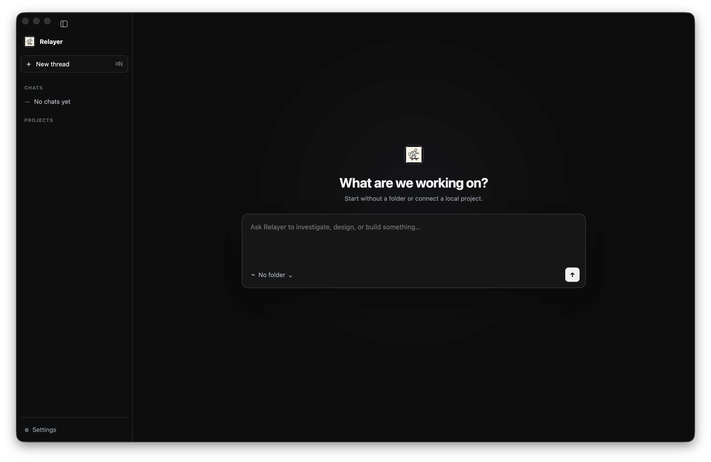
1 2 3Screenshots are implementation evidence, not design mocks and not proof of unrelated features visible in the frame.
The Issue #34 evidence uses the real Electron renderer, Rust app server, SQLite store, and live Codex model discovery. Completion uses a deterministic fixture and makes no paid inference call.
The evidence manifest records live discovery, two accepted interactions, the pinned harness, both model receipts, screenshot mappings, and zero paid inference calls.
User goal: Work without a folder or inside an authorized project, with understandable control over the agent's authority.
Product rule: Git projects offer the local checkout or a Relayer worktree. Every new thread also pins one Rust-owned product permission profile.
Observable result: New Thread shows the selected scope and permission profile before send.
Acceptance: The thread records the exact scope and permission profile selected at send time; later turns inherit both pinned choices.
After Agent setup, Relayer opens the ordinary New thread composer. The user writes a task and chooses one of these scopes before sending:
| Scope | Stored ontology | Filesystem behavior | Sidebar placement |
|---|---|---|---|
| No folder | scope.kind = "standalone", no projectId |
Isolated app-owned working directory; no user-folder access | Chats group |
| Existing project | scope.kind = "project", stable projectId |
Uses the project's authorized folder or chosen worktree | Under the project |
| Open another folder | Creates a project, then selects it | Requests folder access and records canonical path metadata | New project group |
The folder control initially reads Open folder. Opening it shows existing projects, Choose another folder…, and No folder. “Standalone” remains an internal scope name only; it is not user-facing terminology.
The first send creates one top-level user-interaction node. The thread's identity points to that root interaction node; the product does not create a separate semantic thread node for the same event.
When the selected project is a Git repository, an execution control appears beside the folder control:
Forking a thread can keep its current execution location or create a new worktree. The new interaction inherits the conversation graph and project ontology while retaining its own thread-specific history.
The New Thread composer places a permission picker beside the folder control. It uses the product labels and availability returned by GET /api/permission-profiles; the renderer does not expose raw provider sandbox or approval flags. The initial selection is the Rust catalog's default profile.
| Profile | User-facing behavior | Authority boundary |
|---|---|---|
Ask for approval (ask) | Ask the user before actions that require approval. | Bounded workspace authority with user review. |
Approve for me (auto) | Relayer reviews approval requests automatically. This is the default desktop profile. | Bounded workspace authority with automatic review. |
Full access (full) | Run without approval prompts. | Unrestricted authority. The picker must disclose that filesystem and network access are not hard-confined. |
Unavailable profiles remain visible but disabled with a product-readable reason. If no profile is available, New Thread cannot send. The selected profile is written during thread creation, shown with the saved thread, and cannot be changed for later turns in that thread.
standalone.projectId; display names and paths are metadata, not identity.ask, auto, and full.permissionProfileId on the ordinary product thread before inference. Every later interaction inherits that pinned profile.Choice-driven tests cover each scope, Git option, and permission profile. Permission tests cover catalog defaulting, unavailable-profile fallback, no-profile failure, the exact thread-create request, pinned persistence, and the Full access disclosure. They also cover creation failure, revoked permission, duplicate projects, project moves, and both fork options. Filesystem and Git tests use temporary repositories. They must not change a user checkout.
| Requirement group | Current state | Automated proof | Visual proof | Remaining work |
|---|---|---|---|---|
| New Thread shell and initial No folder/folder choice | Partial | The structural desktop scenario asserts New Thread, scopeButton, scopeMenu, and disabled empty send. The Rust integration scenario proves atomic thread/interaction creation and database reopen. |
SCP-001-E1, SCP-001-E2, APP-001-E1, and APP-001-E2 |
No folder create/reopen is verified. Existing-project population, folder-dialog completion, Git detection, and local/new-worktree choice remain unverified, so the overall requirement group stays partial. |
| New Thread permission profile selection | Verified | The desktop test covers product-default selection, preferred-profile selection, unavailable-profile fallback, no-profile failure, Full access disclosure, and the exact permissionProfileId sent during thread creation. Rust integration tests prove the selected profile is validated before inference and pinned to the persisted thread and interactions. |
PERM-001-E1 |
Broader keyboard-navigation and small-window coverage remain shared desktop accessibility requirements. |
SCP-001-E1 — connected New Thread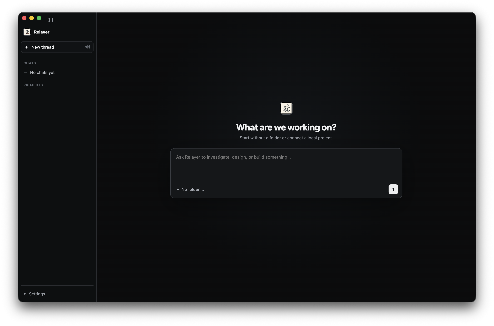
1 2 3 4SCP-001-E2 — inline scope choice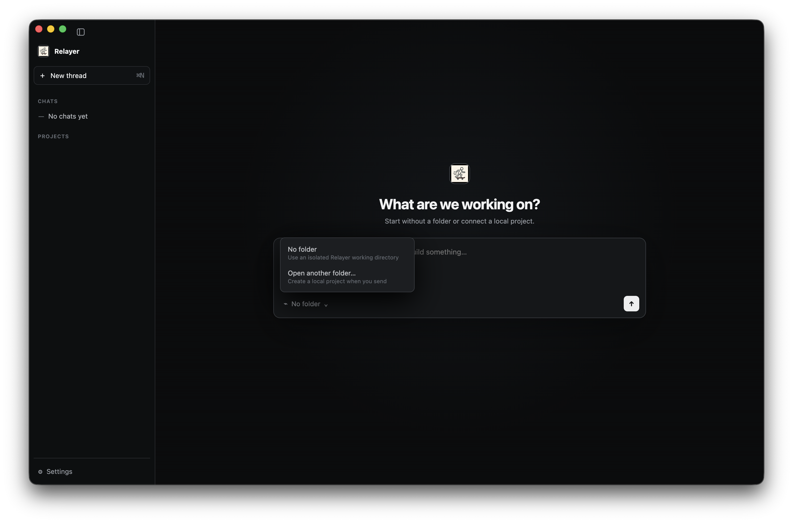
1 2 3PERM-001-E1 — product permission pickerCaptured from the ordinary Relayer desktop renderer backed by the Rust product permission catalog. It proves the visible product choices and disclosure, not the provider-specific translation.
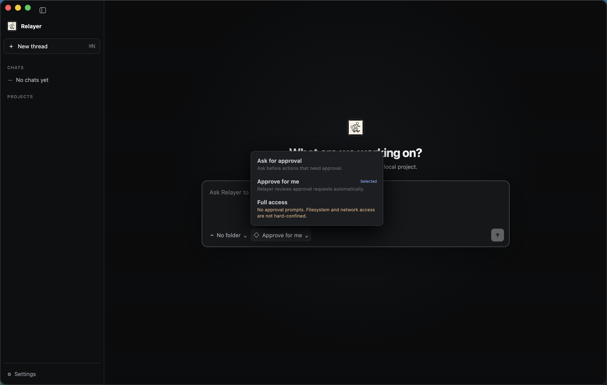
1 2 3User goal: Reopen a thread after navigation or restart.
Product rule: Relayer persists accepted state and explicit interrupted states.
Observable result: Saved threads reopen from Chats or Projects.
Acceptance: Restart preserves the last accepted graph without corruption.
The left sidebar contains New Thread, Chats, and Projects. Chats contains no-folder chats. Projects contains saved thread entries. The footer contains a Settings icon. It also contains a Download update icon when an update is available.
The sidebar is a compact list. It is not a recursive graph tree. A child conversation can become a saved sidebar entry. The sidebar does not show its full ancestry. Graph breadcrumbs show this ancestry.
The header shows the current thread title, scope, and backward/forward turn controls. The composer remains the place to send, stop, and attach context. There is no separate active run dashboard.
Product data is local and disk-persisted:
Current recovery: Startup marks interrupted ordinary and action interactions as failed. Ordinary work continues through a follow-up. One-shot action retry is unavailable.
Persistence uses atomic writes or transactions. A crash may interrupt an in-progress Complete call, but it must not corrupt the last accepted graph. On reopen, accepted turns render immediately; an interrupted interaction is marked stopped or failed and retryable. Recovery is a reliability requirement, not a primary product concept or prominent settings category.
User goal: Change settings and install a trusted update.
Product rule: Settings remain local; releases are signed and verified.
Observable result: The app shows settings and explicit update states.
Acceptance: An update preserves supported product data and settings.
The current Settings sidebar contains:
Planned settings include:
There is no workspace graph build setting in V1. Graph memory is built through Complete interactions, not through a required up-front workspace indexing operation.
The worktree limit applies only to worktrees that Relayer creates and manages. User-created worktrees do not count. Relayer must not delete them.
Section 17.3 records three open decisions. These decisions are the default limit, the limit scope, and the flow when the user reaches the limit.
Signed desktop updates are essential V1 distribution infrastructure.
Download update action and a dismiss control.Event-driven tests must cover persistence and visible state changes. The tests cover launch, reopen, interrupted writes, stopped runs, retry, settings, and traces. They also cover each update state, corrupt manifests, signature failure, offline checks, and migration failure.
The current updater test covers check failure, retry, availability, download, readiness, and the install request. Release recovery uses immutable history, a removable channel pointer, and forward-only versions. It does not use automatic downgrade. Each release also requires a signed update smoke test on each supported macOS version.
| Requirement group | Current state | Automated proof | Visual proof | Remaining work |
|---|---|---|---|---|
| Full-page Settings | Partial | Tests cover sidebar navigation, defaults, provider refresh, system families, custom families, validation, ordering, deletion, and narrow layouts. | SET-001-E1 plus the model-settings evidence under assets/evidence/model-settings |
Disconnect recovery, retained product data, project/storage controls, Git/worktree limits, API-key providers, and diagnostics remain. |
| Collapsible persistent shell | Verified | The same structural scenario asserts collapseSidebar; current visual evidence proves both expanded and collapsed states. |
SHL-001-E1 below |
Keyboard, accessibility, restart persistence, small-window layout, and populated project/thread lists remain broader desktop requirements. |
| Application updater | Partial — Stable verified | One updater test covers checks, availability, progress, readiness, installation, retry, channel persistence, and downgrade protection. It does not use network access. Release tests cover identity, version, channel, manifests, ZIP reconstruction, hashes, receipts, tampering, tags, publication, retry, promotion, and replacement rejection. The desktop suite keeps these flows in one file with 10 tests. | UPD-002-E1 through UPD-002-E6 cover six release events. These include signed launch, empty-feed behavior, the failed canary, corrected updates, Stable promotion, and Stable feed use. The screenshots show the inspected visible states. Machine-readable receipts connect the candidate, canary, manifest, and public artifact hashes. |
The macOS 13.3-through-current support matrix, active-Complete restart deferral, and corrupt hosted artifact behavior remain undone. A real later-version migration and failed-migration recovery now belong to the app-server persistence track and are not claimed by updater evidence. |
SET-001-E1 — full-page SettingsThe capture uses a generic connected-account label so personal account identity is not stored in the repository. All other visible state comes from the Electron renderer.
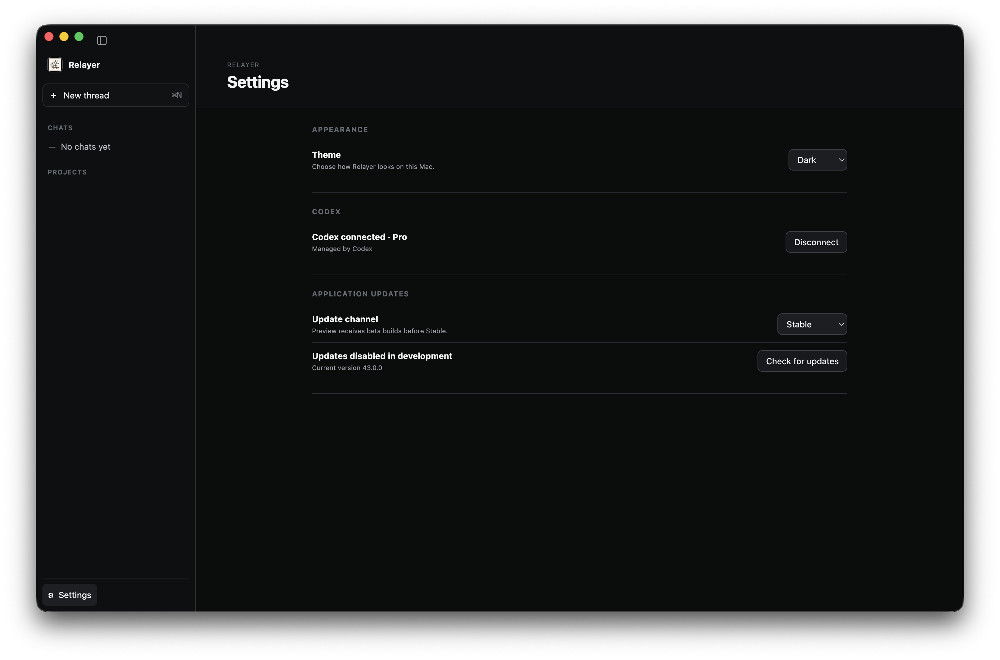
1 2 3 4 5 6SHL-001-E1 — collapsed sidebar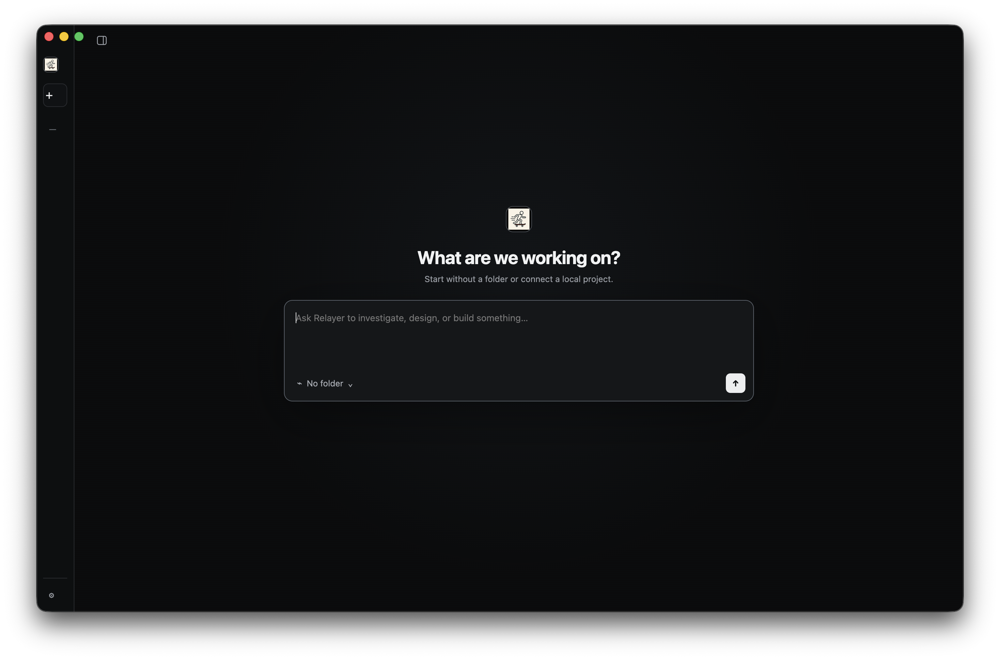
1 2 3This evidence proves packaging and updating only. It does not, by itself, prove persistence, harness execution, graph rendering, or another product capability.
Current checkpoint: Product evidence verifies Preview updates and Stable promotion on Apple Silicon and Intel. Protected workflows published and promoted signed 0.2.13 artifacts for both targets.
A remote arm64 Mac used macOS 15.6. The signed 0.2.3 app used the Relayer controls to find and install 0.2.4. The update restarted the app and replaced the bundle. It kept the Codex account, Light appearance, and saved Preview choice. Code-signature and Gatekeeper checks passed. The app then showed Up to date without an error.
Protected workflow 32105585844 promoted the same bytes. Stable latest-mac.yml has the same SHA-256 as the verified Preview manifest. The installed 0.2.4 app then selected Stable and checked the live feed. It showed Up to date.
Native Intel workflow 32350071508 updated 0.2.10 to 0.2.11. Protected workflow 32372106406 then promoted the same bytes. Intel Stable and Preview manifests are byte-identical.
Native Apple Silicon workflow 32399053432 updated 0.2.10 to 0.2.11. Protected workflow 32399976404 then promoted the same bytes. Apple Silicon Stable and Preview manifests are byte-identical.
Native workflows 32443697093 and 32443698408 updated Apple Silicon and Intel from 0.2.11 to 0.2.12. Protected workflows 32444315112 and 32444318263 then promoted the same target-specific bytes.
Native workflows 32534359978 and 32534361604 updated both targets from 0.2.12 to 0.2.13. Protected workflows 32535131928 and 32535133480 then promoted the same target-specific bytes.
0.2.2 DMG matched its CDN checksum. Developer ID, Gatekeeper, both staples, arm64 identity, bundle ID, and version passed before installation.32098888395, 32099544204, and 32103757098 signed and notarized the exact merged 0.2.2, 0.2.3, and 0.2.4 commits.beta-mac.yml moved only after public-byte verification.0.2.3 process quit, and the bundle advanced to 0.2.4. The new process preserved Light appearance, the Codex account, and the Preview choice.32105585844 promoted the exact 0.2.4 Preview bytes, recorded an immutable receipt, and moved latest-mac.yml. The installed app consumed Stable and reported Up to date.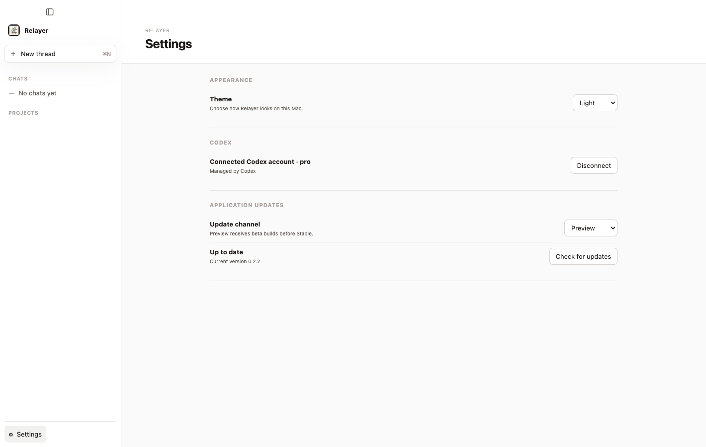
1 2 30.2.2 seed is ready for the real update.1 is the saved Light preference. 2 is the Preview channel. 3 proves the baseline is 0.2.2 and initially up to date.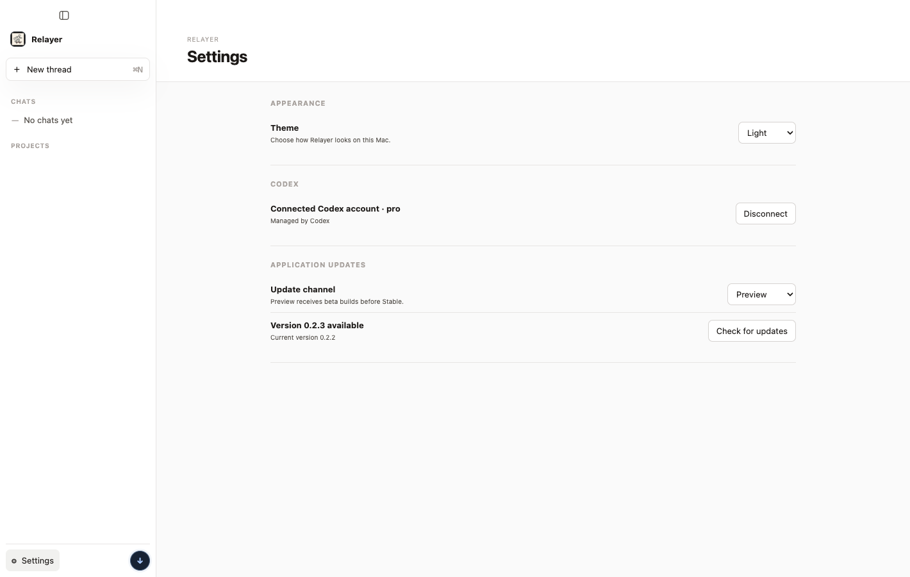
1 20.2.3 to the signed 0.2.2 app.1 shows both current and available versions. 2 is the temporary update indicator in the sidebar.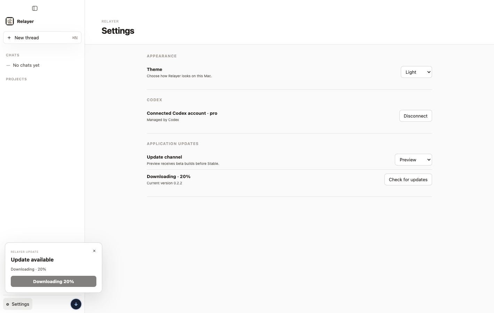
1 2#9 made displayed progress monotonic; the later 0.2.3 → 0.2.4 canary observed 18 → 36 → 56 → 71 → 85 → 99 → 100 with no regression.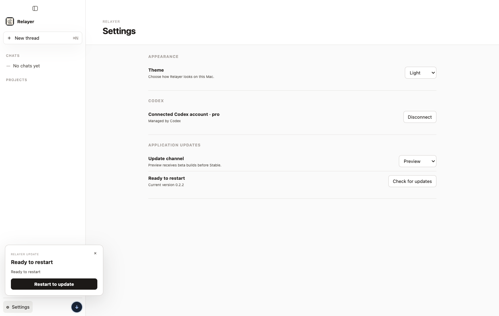
1 20.2.2 with 0.2.3 and the new app returned healthy.1 proves Light appearance persisted. 2 proves the Codex connection remained available without storing personal identity in this image. 3 is the Preview channel. 4 proves the relaunched app is 0.2.3 and up to date.0.2.4 Preview candidate returned healthy after replacement.1 proves Light appearance persisted. 2 preserves proof of the connected Codex account while redacting personal identity. 3 proves an explicitly saved Preview choice survived. 4 proves 0.2.4 is running and up to date.0.2.4 application consumes the promoted Stable feed.1 proves Light appearance remained intact. 2 preserves the connected Codex proof while redacting personal identity. 3 is the selected Stable channel. 4 proves the running Stable version is 0.2.4 and up to date.
0.2.11.0.2.11 Preview target.The real updater popover reports Update available and Version 0.2.11 available.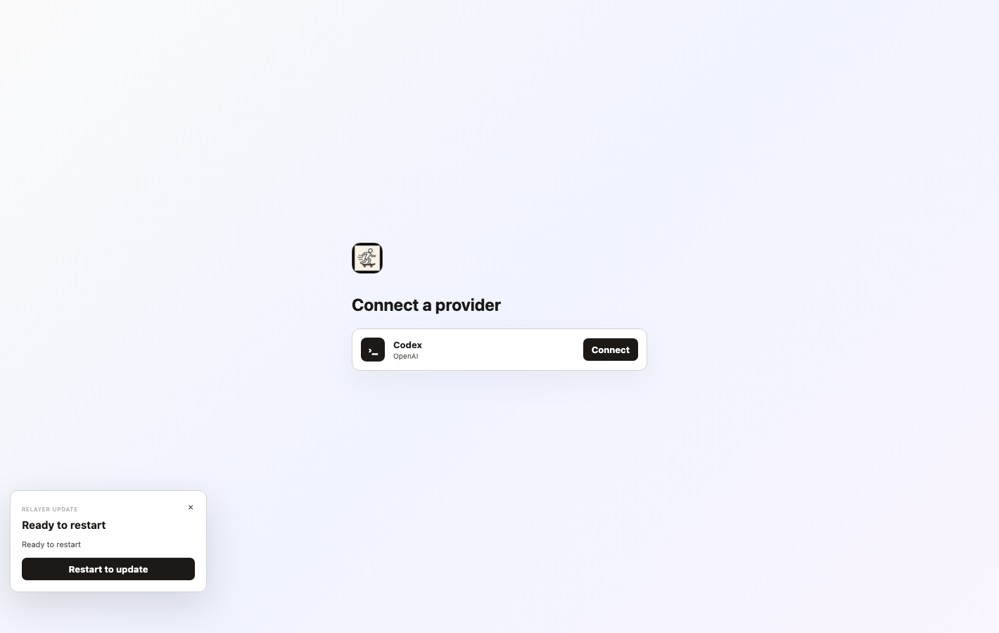
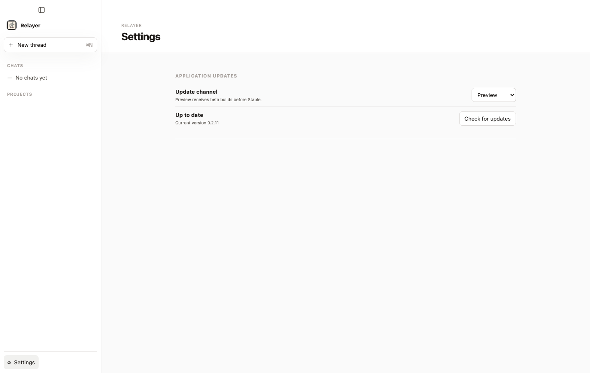
0.2.11 Stable-candidate proof
0.2.11.0.2.11 Preview target.The real updater popover reports Update available and Version 0.2.11 available.
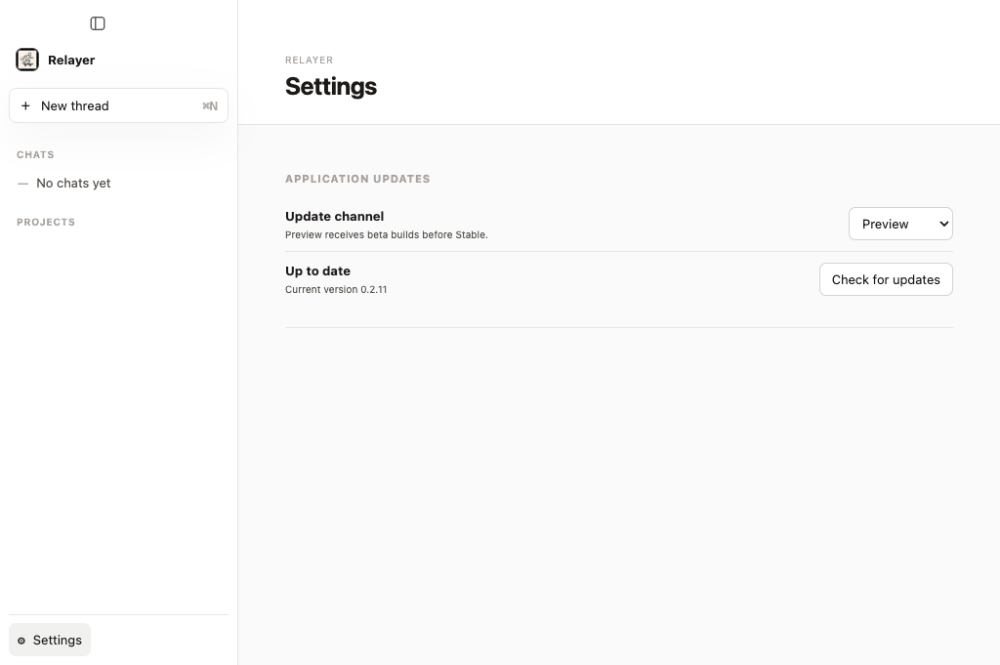
0.2.12 Stable-candidate proof
0.2.12.0.2.12 Preview target.The real updater popover reports Update available and Version 0.2.12 available.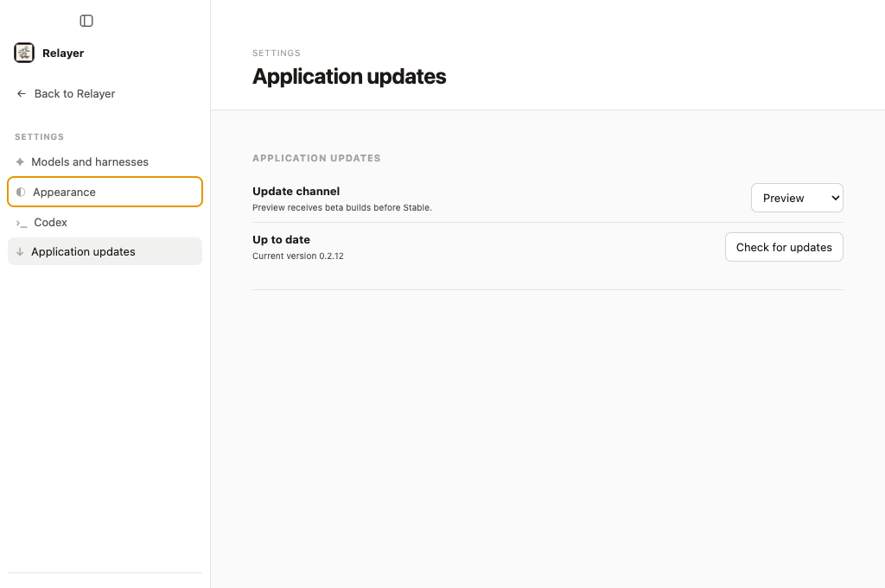
0.2.12 Stable-candidate proof0.2.12.0.2.12 Preview target.The real updater popover reports Update available and Version 0.2.12 available.
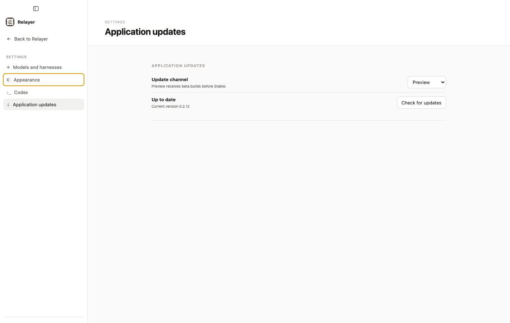
0.2.13 Stable-candidate proof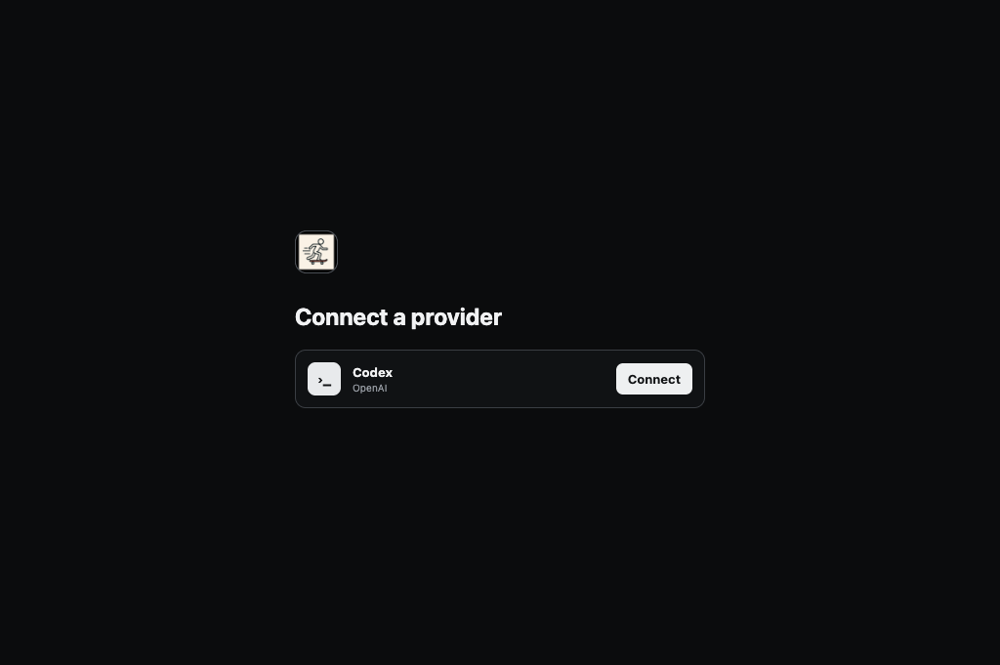
0.2.13.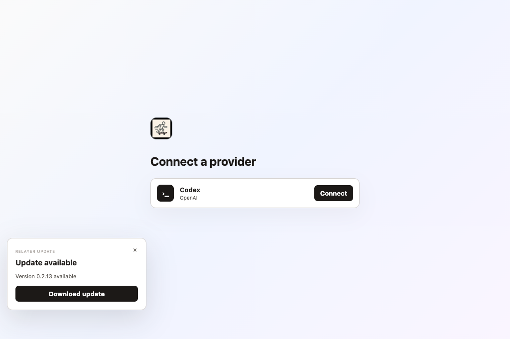
0.2.13 Preview target.The updater reports Update available and Version 0.2.13 available.
0.2.13 Stable-candidate proof
0.2.13.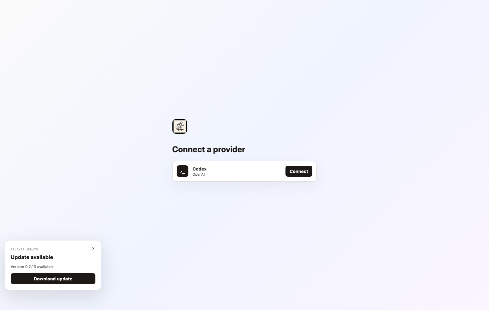
0.2.13 Preview target.The updater reports Update available and Version 0.2.13 available.
| In scope | Explicitly out of scope |
|---|---|
| Fast unsigned local package for developer visual testing | Harness selection or agent execution |
| Signed, notarized Preview artifact for external beta testing | Complete, graph output, or graph interaction |
| Stable and Preview release identities/channels | Project/worktree completion and thread persistence |
| Hosted update artifact and channel manifest | Windows x64 release; its pipeline is blocked and disabled |
| In-app check, available, download progress, ready, restart, success, and retryable failure states | Later-version SQLite migration and failed-migration recovery, which are validated in the app-server persistence track |
| Previous-Preview-version to current-Preview-version update smoke | Automatic binary downgrade; treating an older application as a safe database recovery mechanism |
ai.relayer.desktop application. Unsigned packages use ai.relayer.desktop.development. Native macOS targets proved 0.2.11 → 0.2.12.https://updates.relayerlabs.ai/desktop. Versioned artifacts are immutable. Target channel metadata is written last.NZ253AL7U6. Notarization credentials come from the local environment or a protected GitHub environment. The repository must not contain these secrets.| Validation | Fast path | Product/release proof |
|---|---|---|
| Updater state machine | Keep one scenario-driven fake-updater test covering no update, available, progress, ready, install request, failure, and retry. No network and no additional test per event. | Screenshots of the actual packaged app in available, downloading, ready-to-restart, and failure states. |
| Unsigned developer package | Build once and inspect the packaged file inventory, bundle identity, icon, and version. | Launch with an isolated profile and capture Settings/About evidence; never present it as a distributable build. |
| Signed Preview package | Verify signing, hardened runtime, notarization, stapling, Gatekeeper acceptance, update ZIP, and checksums with release scripts. | Install the DMG on a clean macOS user, launch it, connect Codex or use a prepared non-secret test profile, and capture the installed app. |
| Real update | Generate two small Preview versions and publish only to the Preview feed. | Verified for Preview The signed canaries updated through the UI and restarted into version N. They verified the new version, Codex account, Preview choice, and preferences. No harness call occurred. |
| Stable promotion | Revalidate the immutable Preview receipt, exact six hosted artifacts, committed canary hash, monotonic version, and conditional Stable pointer write. Never rebuild the candidate during promotion. | Verified Workflow 32105585844 promoted 0.2.4. The public Stable manifest hash equals the Preview hash. The immutable receipt records all six artifact hashes. The installed app checked Stable successfully. |
| Failure safety | Serve an offline feed, missing manifest, and invalid/tampered artifact through one fixture-driven integration scenario. | The packaged app remains launchable on the old version, presents a retryable error, and does not lose the test preference. |
UPD-002-E1 — signed Preview 0.2.0 launchThis arm64 application was built from commit 4e5b9c3d21d2c7bbf902313d655f8e70aac30e75. It has a Developer ID signature and Apple notarization. The test used an empty isolated profile.
Gatekeeper accepted the app. The stapler validated the app and the DMG. The release receipt records the final DMG, updater ZIP hashes, and blockmaps.
Historical screenshot: assets/evidence/desktop/signed-preview-0.2.0.png.
Machine-readable evidence: assets/evidence/desktop/signed-preview-0.2.0-release.json.
UPD-002-E2 — signed Preview feed checkA signed arm64 build from commit 3fb0e658706fd0fd3cc5993b3f353c6f4e1b6a84 used an isolated profile. Its packaged updater selected Preview and requested the sealed beta-mac.yml URL. No Preview release was available. The server returned the expected 403 AccessDenied. The app stayed usable and showed a short retry message.
Historical screenshot: assets/evidence/desktop/signed-preview-0.2.0-updater-empty-feed.png. This evidence does not show a successful update from an earlier version.
Machine-readable evidence: assets/evidence/desktop/signed-preview-0.2.0-updater-empty-feed.json.
UPD-002-E3 — failed diagnostic 0.2.0 → 0.2.1 canaryThe first hosted canary proved discovery, prompt, full ZIP download, checksum acceptance, and ready-to-restart, then failed during native staging. Electron 43's bundled Squirrel patch reverses its numeric-version predicate when ElectronSquirrelPreventDowngrades is present, causing valid 0.2.0 to be rejected as an invalid version. PR #6 removed that broken native flag while retaining the application-level allowDowngrade = false check and monotonic publisher. The failed pair is diagnostic evidence, not a successful product update.
UPD-002-E4 — corrected signed Preview 0.2.2 → 0.2.3The signed 0.2.2 app ran on a remote arm64 Mac. The visible controls found, downloaded, and staged signed 0.2.3. The app then restarted.
The observed sequence was 0.2.2 running → app stopped → bundle replaced with 0.2.3 → 0.2.3 running. The final app passed code-signature verification. It kept the connected Codex account and the saved Light appearance. It selected Preview and showed Up to date without an updater error.
See the annotated screenshots in Current visual proof above. Machine-readable evidence: assets/evidence/desktop/signed-preview-0.2.2-to-0.2.3.json.
UPD-002-E5 — signed Preview 0.2.3 → 0.2.4 Stable-candidate canaryThe signed 0.2.3 app saved Preview as its channel. It found and downloaded the immutable 0.2.4 candidate. The displayed progress did not move backward. The app reached the ready state, stopped, replaced the bundle, and started signed 0.2.4.
The final app passed code-signature verification and Gatekeeper assessment. It kept the Codex account, Light appearance, and Preview choice. It then showed Up to date without an updater error.
Privacy-redacted screenshot: assets/evidence/desktop/signed-preview-0.2.4-installed.png. Machine-readable promotion evidence: assets/evidence/desktop/signed-preview-0.2.3-to-0.2.4.json.
UPD-002-E6 — exact-artifact Stable promotion and product checkProtected workflow 32105585844 promoted 0.2.4 from the immutable Preview receipt after validating the committed 0.2.3 → 0.2.4 canary. It did not rebuild or re-sign the application. Stable latest-mac.yml has SHA-256 1737ebd5d5393970c73f5b1ef41ac128e7090dc0e58d6d57a1f87a7675e430f2, identical to the verified Preview manifest. The installed, notarized 0.2.4 app then selected Stable, checked the live feed, and reported Up to date.
Privacy-redacted screenshot: assets/evidence/desktop/signed-stable-0.2.4-up-to-date.png. Machine-readable receipt: assets/evidence/desktop/signed-stable-0.2.4-promotion.json.
UPD-002-E7 — signed Intel Preview 0.2.10 → 0.2.11 Stable-candidate canaryNative Intel workflow 32350071508 installed the signed-DMG 0.2.10 bootstrap from commit 579a034b1a6ad003a2635f5ca7485f63115f5efc. The visible product controls discovered, downloaded, and staged the immutable 0.2.11 Preview target from commit 088a4168e066bd9a62f2837cfddfd1bb14f8ff07. The app restarted into a different process and reported Preview, Up to date, and Current version 0.2.11.
The sealed 22-record trace is fail-free. It records monotonic displayed progress of 19 → 37 → 47 → 60 → 72 → 84 → 97 → 99. The final app, target DMG, and target ZIP passed signature, notarization, Gatekeeper, public-byte, and publication-receipt checks. Four distinct screenshots show first install, available, ready, and installed states. This evidence passed the protected Stable promotion gate in workflow 32372106406.
See the Intel x64 candidate proof above. Machine-readable canary evidence: assets/evidence/desktop/macos-x64-0.2.10-to-0.2.11/macos-intel-preview-canary.json. Sealed trace: assets/evidence/desktop/macos-x64-0.2.10-to-0.2.11/macos-intel-preview-update.jsonl.
UPD-002-E8 — exact-artifact Intel Stable promotionProtected workflow 32372106406 promoted Intel 0.2.11 after validating the committed canary and immutable Preview receipt. It did not rebuild or re-sign the application. Live Stable latest-mac.yml has SHA-256 1da03a28b3c68bf9300c69621b7fd844b9b10a7051e5aadb2b5a9e579f53b950. It is byte-identical to the verified Preview manifest.
The public DMG has SHA-256 3ca50a030705bc928b5bc04e0918f751fd6a551ff8f411e74d27cd63564bec4e. The public ZIP has SHA-256 79489d76dc46f6a8ea27faab844642287180bf9de11d19f3c8f92fb61dea2c12. Both match the signed candidate and promotion receipt.
Machine-readable Stable receipt: assets/evidence/desktop/macos-x64-0.2.10-to-0.2.11/stable-promotion-macos-x64-0.2.11.json.
UPD-002-E9 — signed Apple Silicon Preview 0.2.10 → 0.2.11 Stable-candidate canaryNative Apple Silicon workflow 32399053432 installed the signed 0.2.10 seed from commit 579a034b1a6ad003a2635f5ca7485f63115f5efc. It updated through Preview to immutable 0.2.11 from commit 088a4168e066bd9a62f2837cfddfd1bb14f8ff07.
The sealed 20-record trace is fail-free. Displayed progress advanced through 10 → 25 → 38 → 54 → 70 → 82 → 99. A different process relaunched into Preview 0.2.11.
Four distinct screenshots show first install, available, ready, and installed states. The target app and both DMGs passed signature, notarization, Gatekeeper, and receipt checks.
See the Apple Silicon candidate proof above. Machine-readable canary evidence: assets/evidence/desktop/macos-arm64-0.2.10-to-0.2.11/macos-arm64-preview-canary.json. Sealed trace: assets/evidence/desktop/macos-arm64-0.2.10-to-0.2.11/macos-arm64-preview-update.jsonl.
This evidence passed the protected Apple Silicon Stable promotion gate in workflow 32399976404.
UPD-002-E10 — exact-artifact Apple Silicon Stable promotionProtected workflow 32399976404 promoted Apple Silicon 0.2.11 after validating the committed canary and immutable Preview receipt. It did not rebuild or re-sign the application.
Live Stable latest-mac.yml has SHA-256 c87bf5b830b2053a0b4e5b7f6bc3b5504f10b3b08a38f3b42006c817f43aa711. It is byte-identical to the verified Preview manifest.
The public DMG has SHA-256 247738cfe47b89a5f6d12a7e678a01fe11eb85e9d62baa6b27c8f08addf5a2ee. The public ZIP has SHA-256 df89b90b3e31998af608c99efe271e378f96346ee437c7305182a7c921615d24. Both match the signed candidate and promotion receipt.
Machine-readable Stable receipt: assets/evidence/desktop/macos-arm64-0.2.10-to-0.2.11/stable-promotion-macos-arm64-0.2.11.json.
UPD-002-E11 — signed Apple Silicon Preview 0.2.11 → 0.2.12 Stable-candidate canaryNative Apple Silicon workflow 32443697093 installed signed 0.2.11 and updated through Preview to immutable 0.2.12 from commit a1ca4c76d1dae8fa1d4d2590d23401d7dff2874c.
The sealed 17-record trace is fail-free. Displayed progress advanced through 18 → 45 → 70 → 92 → 99. A different process relaunched into Preview 0.2.12.
See the Apple Silicon candidate proof above. Machine-readable canary evidence: assets/evidence/desktop/macos-arm64-0.2.11-to-0.2.12/macos-arm64-preview-canary.json.
UPD-002-E12 — signed Intel Preview 0.2.11 → 0.2.12 Stable-candidate canaryNative Intel workflow 32443698408 installed signed 0.2.11 and updated through Preview to immutable 0.2.12 from commit a1ca4c76d1dae8fa1d4d2590d23401d7dff2874c.
The sealed 21-record trace is fail-free. Displayed progress advanced through 10 → 29 → 43 → 61 → 79 → 97 → 99. A different process relaunched into Preview 0.2.12.
See the Intel candidate proof above. Machine-readable canary evidence: assets/evidence/desktop/macos-x64-0.2.11-to-0.2.12/macos-intel-preview-canary.json.
UPD-002-E13 — exact-artifact Apple Silicon 0.2.12 Stable promotionProtected workflow 32444315112 promoted the exact Apple Silicon Preview bytes after validating the committed canary. Stable and Preview manifests share SHA-256 78e7e680461987aa419e4ceaef6d3ea516de73197f5c4d50f42fbd88635f6da8.
Machine-readable receipt: assets/evidence/desktop/macos-arm64-0.2.11-to-0.2.12/stable-promotion-macos-arm64-0.2.12.json.
UPD-002-E14 — exact-artifact Intel 0.2.12 Stable promotionProtected workflow 32444318263 promoted the exact Intel Preview bytes after validating the committed canary. Stable and Preview manifests share SHA-256 7e84221925bf3639a8e87960f182550b98dcd6f92f78f7753dfe7c9888af248c.
Machine-readable receipt: assets/evidence/desktop/macos-x64-0.2.11-to-0.2.12/stable-promotion-macos-x64-0.2.12.json.
UPD-002-E15 — signed Apple Silicon Preview 0.2.12 → 0.2.13 Stable-candidate canaryNative workflow 32534359978 updated signed 0.2.12 through Preview to immutable 0.2.13 from commit 4bef0e29e295964eb700b8a67ff55696c0c9f238.
The sealed 15-record trace is fail-free. Progress advanced through 46 → 88 → 99. A different process relaunched into Preview 0.2.13.
See the Apple Silicon candidate proof above. Machine-readable evidence: assets/evidence/desktop/macos-arm64-0.2.12-to-0.2.13/macos-arm64-preview-canary.json.
UPD-002-E16 — signed Intel Preview 0.2.12 → 0.2.13 Stable-candidate canaryNative workflow 32534361604 updated signed 0.2.12 through Preview to immutable 0.2.13 from commit 4bef0e29e295964eb700b8a67ff55696c0c9f238.
The sealed 22-record trace is fail-free. Progress ended at 99. A different process relaunched into Preview 0.2.13.
See the Intel candidate proof above. Machine-readable evidence: assets/evidence/desktop/macos-x64-0.2.12-to-0.2.13/macos-intel-preview-canary.json.
UPD-002-E17 — exact-artifact Apple Silicon 0.2.13 Stable promotionProtected workflow 32535131928 promoted the exact Apple Silicon Preview bytes after validating the committed canary. Stable and Preview manifests share SHA-256 dbb4d1741a772454bf2fee3317328ea2d0e8b27b0cfd1b6c540eb2275930ce5b.
Machine-readable receipt: assets/evidence/desktop/macos-arm64-0.2.12-to-0.2.13/stable-promotion-macos-arm64-0.2.13.json.
UPD-002-E18 — exact-artifact Intel 0.2.13 Stable promotionProtected workflow 32535133480 promoted the exact Intel Preview bytes after validating the committed canary. Stable and Preview manifests share SHA-256 90f004148a1d045a002c704e91a2cfdf377d728343f76fb0e5ee254567243341.
Machine-readable receipt: assets/evidence/desktop/macos-x64-0.2.12-to-0.2.13/stable-promotion-macos-x64-0.2.13.json.
This slice completes Preview distribution, the previous-version update canary, and the first Stable promotion. The full desktop distribution requirement is still partial.
The macOS 13.3-through-current test matrix is not complete. Tests for a corrupt hosted artifact and restart deferral are also not complete. The initial SQLite schema and fail-closed validation exist. A later-version migration and a forced-failure recovery test remain open.
The graph engine is the only component that opens graph storage or validates graph writes. The Rust app server uses the graph server and persistent harness host. It does not introduce another graph implementation.
| Component | Implementation | Owns | Must not own |
|---|---|---|---|
| Graph engine | Rust library | Storage, graph records, validation, transactions, accepted display closure | Prompts, model sessions, projects, desktop behavior |
| Local graph API | Reusable Rust router plus standalone binary | Loopback transport, token enforcement, request serialization | A second copy of graph rules |
| Graph clients | TypeScript and Python | Agent-friendly objects, references, requests, repairable errors | Database access or authoritative validation |
| Node harness host | Persistent Node process | Harness implementation map, live Codex/Prime sessions, Complete calls | Graph storage or product thread lifecycle |
| Evaluation runner | Node package and local service | Cases, component startup, checks, judge, immutable result bundle | A separate mock Complete or product graph model |
| Relayer app server | Rust process, developed with desktop | Projects, threads, interactions, worktrees, harness coordination, product reads | Harness prompts or duplicated graph rules |
The standalone graph-server binary exists so the harness and evaluation can run before the full product server is built. Production mounts the same graph router and links the same graph core inside the Relayer app server; it does not ship two competing graph authorities.
Relayer product storage owns projects and threads. Graph core does not create project records, thread records, project graphs, thread graphs, graph spaces, or a separate interaction graph. It stores the product-owned positive-integer projectId and threadId on graph records as provenance. Threads with the same project ID read the same accepted graph records. A no-project thread stores projectId = null and reads only records carrying its own thread ID, so standalone threads never share graph records.
Every user turn is represented by one canonical user-interaction graph node. That node's NodeReference is also the product interaction identity after integration; no second interactionNodeId is synthesized. The host supplies project/thread IDs when it asks graph core to create this node. A graph capability stores only the node reference. On every graph request, the engine calls GraphDatabase::writer_for_subgraph(node) and derives read visibility plus draft-write authority from the persisted node.
type NodeReference = number; // positive SQLite integer assigned after successful submission
type EdgeReference = number;
type LayerReference = number;
type ActionReference = number;
type GraphNode = {
ref?: NodeReference;
icon: string;
title: string;
detail: string; // Markdown/HTML-compatible product detail
};
type GraphEdge = {
ref: EdgeReference;
endpoints: readonly [NodeReference, NodeReference]; // undirected
};
type GraphLayer = {
ref: LayerReference;
nodes: NodeReference[];
edges: EdgeReference[]; // exact visible connections, never inferred
};
type NavigateRelation = "expand" | "reference";
type NodeAction =
| { ref: ActionReference; source: NodeReference; sourceLayer?: LayerReference; kind: "navigate"; relation: NavigateRelation; label: string; targetLayer: LayerReference }
| { ref: ActionReference; source: NodeReference; sourceLayer?: LayerReference; kind: "invoke"; label: string; interactionText?: string };
A layer packages exact node and edge references. A navigate action opens a layer, including a layer that contains one node.
Actions remain node-owned. Node-level actions also record their authoring layer. The product does not expose this provenance or the navigate relation.
interface GraphClient {
getNode(ref: NodeReference): Promise<GraphNode>;
getNeighbors(ref: NodeReference): Promise<GraphNode[]>;
submitNode(node: GraphNode): Promise<NodeReference>;
createEdge(left: GraphNode | NodeReference, right: GraphNode | NodeReference): Promise<EdgeReference>;
createEdges(pairs: ReadonlyArray<readonly [GraphNode | NodeReference, GraphNode | NodeReference]>): Promise<EdgeReference[]>;
submitLayer(layer: GraphLayer, options?: { sizeJustification?: string }): Promise<LayerReference>;
addAction(source: GraphNode | NodeReference, action: NodeAction): Promise<ActionReference>;
submit(interactionNode: NodeReference): Promise<ResolvedGraphLayer>;
}
The clients are object-oriented because models are better at constructing and repairing nodes and layers than remembering large collections of raw IDs. A local node object receives its stable reference after its first successful submitNode. Resubmitting that same local object updates its current draft rather than creating a duplicate. A rejected edit preserves the last valid draft and returns a field-specific error so the harness can repair and resubmit it.
createEdge accepts node objects or references. Creating an edge from a new node to an accepted historical node does not resubmit or modify the historical node. Adding an accepted node to a new layer also does not modify it. Accepted historical records are immutable; a changed explanation is represented by a new node connected to the old node.
| Operation | Deterministic checks | Repair behavior |
|---|---|---|
submitNode | Required icon/title/detail, supported markup, field and payload limits | Return exact invalid field and keep the last valid draft |
createEdge | Both endpoints submitted, no self-edge, no duplicate undirected edge | Return the offending endpoint or existing edge |
submitLayer | Validate members, edges, uniqueness, connectivity, and size. Layers with 6–8 nodes require a hidden justification. Reject larger layers. | Return the precise object or size failure. Discard a valid size justification. |
addAction | Validate source, authoring layer, kind, relation, target, ownership, visibility, and context-specific authoring permission. | Return the invalid source, target, provenance, or field. |
submit(interaction) | Require one root expand action. Validate the current-authored closure, expand acyclicity, references, authority, and orphan drafts. | Keep all drafts hidden. Return the exact repairable path. |
Error responses contain a stable code, an object path, and a repair message. The message is part of the agent contract. It must identify the failure and the corrective operation. The engine does not make a semantic judgment.
graph.submit(interactionNode) is the deterministic completion boundary. It derives exactly one interaction-authored root expand action.
The engine traverses only current-interaction actions. Expand paths must be acyclic. Reference paths can branch, share destinations, or cycle.
A visited set terminates reference traversal. Accepted reference targets are immutable boundaries. The engine validates visibility and authority without reaccepting their history.
The engine rejects unreachable current-interaction layers. One atomic operation accepts the valid reachable drafts. A focused flat root remains valid.
The accepted return value is a ResolvedGraphLayer containing full node objects, exact visible edges, and node actions for the root layer. This is the immediate display payload returned by Complete. The persisted layer reference remains the source for later navigation and reload.
The Rust graph router is exposed on loopback HTTP; a Unix-domain-socket transport may replace loopback only if the Codex sandbox cannot reach it. Harnesses do not use MCP as the graph transport, do not open SQLite directly, and do not treat a CLI as the primary graph API. They access graph state through typed TypeScript or Python clients and the loopback Rust API. A selected harness may still use implementation-owned native tools or MCP for non-graph capabilities such as browser use. Those mechanisms do not carry GraphComplete authority.
For claude.basic, Auto remains bound to SDK acceptEdits. Its harness binding pre-approves one code-owned coarse browser MCP unit through allowedTools. SDK 0.3.250 runs that unit without a user prompt or a separate model or Relayer reviewer. Ask leaves the unit unlisted. Full keeps bypassPermissions. Relayer does not inspect or classify inner browser actions. This harness-specific automatic approval is the settled issue #250 contract, not a browser permission mode.
POST /api/control/capabilities (trusted remint after restart)
POST /api/graph/nodes
POST /api/graph/edges
POST /api/graph/layers
POST /api/graph/actions
POST /api/graph/submit
GET /api/graph/nodes/:id
GET /api/graph/nodes/:id/neighbors
GET /api/graph/layers/:id
GET /api/graph/nodes/:id/output
Every harness request carries an opaque random capability token. The server stores only token -> canonical NodeId in the current slice. That node defines project and thread visibility. It also defines the writable draft subgraph for the short-lived GraphWriter. submit(node) must receive the same root node. The engine rejects writes after that node has an accepted completion.
The token never enters graph content, evaluation evidence, the renderer, or the harness state file. Each Complete call receives a host-owned graph-scope handle. The handle closes and the Rust token is revoked when that call settles.
The host persists the copied harness configuration and implementation-owned opaque JSON resume state. It recreates the harness object after a restart without graph credentials. Trusted control code supplies a new capability only when it starts a Complete call.
The two-turn evaluation verifies distinct, revoked capabilities and one persistent harness object. A full process-restart recovery evaluation remains future work. Provider credentials remain in product-owned secret storage.
Goal: Make useful graph expansion and evidence references reliable across task types and both production harnesses.
Primary issue: #36 Enable recursive graph navigation generally.
Current status: Verified on the implementation branch. PR #32 supplied the second required harness.
flowchart LR
I19["#19 Judge foundation — Done"] --> I36["#36 Expand and reference semantics — Verified"]
PR32["PR #32 Prime Agent harness — Merged"] --> I36
I23["#23 Durable invoke foundation — Done"] --> I55["#55 Resolve invoke into navigation — Blocked"]
I36 --> I55
I28["#28 Breadcrumb foundation — Done"] --> I56["#56 Generic navigation history — Done"]
I36 --> I56
I55 --> I56
I52["#52 Graph search — Parallel"] -. "Improves reference discovery; does not block" .-> I36
classDef done fill:#eaf7ee,stroke:#49a267,color:#173120
classDef ready fill:#ece8ff,stroke:#7557e8,color:#302751
classDef parallel fill:#edf5ff,stroke:#3478bd,color:#172c46
classDef blocked fill:#fff7df,stroke:#d4a62c,color:#352b13
class I19,PR32,I23,I28 done
class I36 done
class I52 parallel
class I55,I56 blocked
Solid arrows are delivery dependencies. The dashed arrow is non-blocking enablement. No issue in this DAG expands #36 scope.
run-2026-08-21T02-17-18-144Z-213ecbe6 passed both Luna harnesses with Sol High judging.Goal: Let authorized agents query accepted graph structure without known record identifiers.
Primary issue: #52 Add graph search functionality.
Current status: The product contract is settled. The Issue #261 feasibility gate rejects the upstream Ladybug artifacts as shipped. The approved product decision raises the minimum supported macOS version to 13.3. At that floor, exact Ladybug 0.18.0 uses pinned static OpenSSL and Relayer-owned link metadata without a fork. The complete positive v1 corpus and graph-server lifecycle pass locally on both macOS targets. Windows native proof and binding-license bytes remain unresolved, so #262 and later delivery nodes stay blocked. The graph-search contract stays unchanged.
interaction.context, and unresolved invokes never enter the searchable topology.The versioned graph-query contract freezes grammar, values, topology, limits, errors, and compatibility.
type CompleteInputGraph = NodeReference;
interface HarnessRunContext {
origin: { kind: "root" } | { kind: "invoke"; sourceCompletionId: GraphId; actionId: GraphId };
inputGraph: GraphNode;
graph: HarnessGraphScope;
}
interface Harness {
complete(context: HarnessRunContext, signal?: AbortSignal): NativeExecutionHandle;
state(): HarnessSessionState;
dispose?(): void | Promise<void>;
}
interface NativeExecutionHandle {
readonly attached: Promise<OpaqueHarnessState>;
readonly settled: Promise<ProviderExit>;
stopSelf(reason: SafeReason): Promise<void>;
}
The external name remains complete(inputGraph), and that input graph is only a pointer to an already-prepared canonical interaction node. A GraphComplete thread is a graph of completions, not a provider conversation. The trusted human or invoke adapter prepares or exactly recovers the identity, origin, and capability before invoking the shared completion-execution module. The host resolves the pointer once and creates one run context. The persistent harness keeps its working directory and may retain provider-session state as an optimization, but it does not persist a current graph credential.
Complete returns a CompletionHandle whose current and result are settled from durable GraphComplete state independently of NativeExecutionHandle.settled. A successful Return may resolve the semantic result while provider cleanup continues. Provider exit while GraphComplete remains active records trusted failure and never implies success. An explicit recursive call is bound or launched only through that provider adapter's defined native mechanism. Collaboration or RLM trace events alone never create semantic children.
One GraphComplete completion owns one independently runnable provider execution attachment. Provider-native helpers remain inside that attachment and may share its completion authority. Their creation does not create GraphComplete children.
An explicit complete(inputGraph) call creates a new semantic completion and a distinct provider execution attachment. The adapter may use a fresh provider session or safely multiplex an existing session.
Required context and identity come from GraphComplete rather than hidden provider history. The attachment retains the harness's ordinary native helper infrastructure. A helper may ask its owning orchestrator to create semantic work, but helper topology is never mirrored automatically.
Codex binds a semantic child to a fresh app-server thread and turn whose orchestrator receives the child scope. Codex-native subagents remain internal helpers for that orchestrator. Claude binds a semantic child to a fresh Agent SDK query that neither resumes nor replaces the root session. Prime binds a semantic child to a fresh ordinary Prime session and execution. Prime's RLM and subagents remain internal helpers unless that execution explicitly calls Complete again.
The Node harness host is a long-lived child process of the evaluator or Relayer app server. It resolves a small code-owned implementation map and lazily constructs one harness object per thread:
const harnessImplementations: Record<string, HarnessFactory> = {
"codex.basic": createBasicCodexHarness,
"prime.agent": createPrimeAgentHarness,
};
The thread stores a copy of its selected named harness configuration. The configuration's implementation field selects a factory from the map. The host does not interpret the implementation-specific settings object. The host may keep the same JavaScript harness object and provider session alive across turns when the adapter can safely reuse them. Factories may initialize asynchronously.
If the Node process or provider session expires, the host recreates the object from stored configuration and opaque provider resume state when available. The next Complete call supplies its own graph scope and remains semantically valid even when the provider starts a fresh session. Session reuse should be used when obvious and behavior preserving, but continuous GraphComplete context must not depend on it.
The Relayer app server owns one-active-human-root-completion coordination for a thread. The Node host owns the live JavaScript object and a completion registry keyed by canonical completion identity. It serializes construction and durable provider-session state mutation where required, but it does not place recursive provider work behind a thread-global Complete queue. Cancellation, approval, trace, capability, and settlement state are completion scoped. Parent terminality never waits for, cancels, settles, or incorporates an active child. Codex and Prime Agent each retain their native execution behavior; the host owns no recursive child-agent scheduler.
Each YAML file has a unique machine-readable name, selects an implementation type and version, and carries implementation-owned settings. The host validates only the common envelope. Each implementation validates its own settings. Prime Agent can add recursive model policy, review, and budget settings without changing host or product types.
The common envelope may also declare complete.agentAuthored. Missing or false means agent-authored complete(inputGraph) is unavailable.
true grants only the capability to receive a completion broker when the runtime recursive temporal substrate is active. It does not select a provider strategy, add a scheduler, or mirror native subagents into GraphComplete. Product and harness boundaries both fail closed when either authority is absent. The shipped Desktop catalog does not opt in.
schemaVersion: 1
name: codex-basic
implementation: codex.basic
implementationVersion: 1
settings:
sandboxMode: workspace-write
approvalPolicy: never
networkAccessEnabled: true
skipGitRepoCheck: true
The implementation registry defines which code can run. The configuration catalog defines the named production setups that users and evaluations can select. Many configurations can select the same implementation with different settings. Only configuration names must be unique. Duplicate names fail catalog loading. A thread is pinned to the full copied configuration, not only to an implementation type.
A test run selects harness configurations. Test cases do not encode them. An opt-in live run can select codex-basic and codex-basic-high. The runner expands the same harness-agnostic cases across both configurations. Both configurations can resolve to the same codex.basic implementation.
Relayer Eval additionally owns one non-default visible-working-state recursive comparison case. It requires the exact ordered pair codex-eval-complete-disabled and codex-eval-complete-enabled and runs alone. This comparison measures the combined product experience. It is not an isolated causal measurement. The off cell pins V1 and disables agent-authored Complete. The on cell pins V2 and enables it. The pair holds implementation, Codex subscription access, provider/model settings, permission bindings, natural task, and temporal runtime substrate constant. The treatment is pinned to the control cell's resolved provider and model. A real Codex pair requires an explicit dashboard confirmation for exactly two root provider executions plus any agent-authored child execution started by the enabled root. The disabled cell must record no broker authority and no semantic child. The enabled cell must record broker authority and at least one action-bound semantic child. That child must have an exact durable provider-execution attachment and successful settlement. It must also have an accepted succeeded current projection and a complete exportable trace recording nested broker authority. Eval waits up to five seconds after root completion for fire-and-forget child registration. No observed child fails the treatment. That failure is diagnostic; it does not prove that a later launch was impossible. Semantic children are evidence records separate from human turns. One pair proves functional availability and capture, not performance, parent semantic incorporation, or the isolated effect of either V2 or recursion.
codex.basic implementationThe first harness uses the OpenAI Codex TypeScript package and the user's Relayer-scoped Codex login. Its purpose is to test whether the graph contract is simple enough for a coding agent to use, not to approximate the final GraphComplete policy.
graph.submit(interactionNode).This harness does not initially implement graph search, grounding, self-assessment, recursive agents, or a large policy prompt. Those are added only after the basic graph-writing contract and eval are stable.
flowchart LR
EV["Eval runner"] --> HH["Node harness host"]
AS["Relayer Rust app server"] --> HH
HH --> CX["Persistent Codex or Prime harness object"]
CX --> CL["Typed graph client"]
CL --> API["Local Rust graph API"]
API --> GE["Rust graph engine and store"]
GE -->|"Resolved accepted layer"| CL
The evaluator and product app server both use the same harness host and graph contract. The product path adds durable projects, threads, interactions, receipts, and accepted-result rendering.
The GraphComplete runtime milestone is complete when this exact path works:
interaction created
→ harness session activated
→ codex.basic starts or resumes its Codex session
→ Codex uses the typed graph client
→ nodes submitted
→ undirected edges created
→ layer submitted
→ response navigate action added to the interaction
→ graph.submit(interaction) accepts the reachable closure
→ deterministic eval passes
→ saved resolved layer opens in the local movable-node result viewer
This runtime milestone now works through the Relayer app server and Electron renderer. The remaining product work includes cancellation, retry, worktrees, context attachments, and signed live-provider proof.
User goal: Send one interaction to the selected agent.
Product rule: Relayer creates one interaction node and calls Complete once.
Observable result: The app returns an accepted, stopped, or failed state.
Acceptance: An accepted layer matches the persisted graph state.
A message creates one interaction node, connects any selected prior state to it, and makes one Complete call. On acceptance, the engine records the run's output navigate action and response layer under that interaction. Later interaction nodes connect into the existing conversation graph and may refer to any prior node. The thread graph is the V1 conversation memory; V1 does not maintain a separate continuously updated summary.
If a later turn needs a stale explanation, the harness creates a new node and connects it to the accepted historical node. It does not rewrite accepted history. Otherwise the old node remains unchanged. Broader recursive freshness propagation is deferred.
Each Complete call ends in one explicit state: accepted, stopped, or failed. An accepted result contains the resolved first layer. A stopped or failed result contains a retry decision and a short user-facing message.
A model turn ending is not acceptance. Only graph.submit(interactionNode) can accept the response graph.
Relayer owns one hidden, versioned personal presentation graph that guides how supported harnesses author response graphs. This guidance is a preference, not a mandatory output schema. Explicit user instructions take precedence. Graph integrity remains deterministic, and a flat accepted answer remains valid.
Each version is an ordinary immutable accepted GraphComplete completion in one dedicated product-owned profile thread. Neutral V0 contains no renderable preference. Active V1 contains exactly two presentation-preference nodes with authored layout and their ordinary graph relationship:
Published V2 is a third ordinary immutable completion in the same hidden profile thread; V1 remains active until a separate reviewed activation. V2 does not reuse or mutate V1 graph records. Its one required root layer owns self-contained versions of the two V1 concepts plus a third presentation-preference node:
Decision-useful center is the V2 root layer's semantic hub. Ordinary undirected edges connect it to Adaptive progressive disclosure and Visible working state. Its authored triangular layout places the hub above the two related preferences. V2 has no nested preference layer.
Interaction creation atomically pins one published, non-retired version through a control-owned attachment. The attachment references the accepted profile completion rather than copying it. Preparation, retry, recovery, and resumed provider sessions reuse the stored pin. Changing the active version affects only interactions created afterward. Invalid, missing, retired, mismatched, duplicate, or cross-scope versions fail before provider execution. Historical interactions without an attachment remain readable.
An invoke-created semantic child atomically copies the source interaction's exact pinned version into its own control-owned attachment. It does not resolve the version active when the child is created. Retry and restart therefore preserve one personalization graph throughout a semantic task tree even if product policy changes while the root is running.
The harness deterministically renders the pinned graph after generic GraphComplete guidance and before the task input. The root and provider-native children that can author graph content receive the same rendered guidance; unrelated delegates do not. Model and provider capabilities cannot create, replace, remove, or mutate the attachment or published preference graph.
When current advancement is supported, the graph can be a useful working surface before terminal acceptance. An advance publishes a validated durable layer as current without completing the interaction. Later material changes may advance another immutable revision. Return establishes the final accepted layer. These presentations contain decision-useful work state, not token streaming, tool-by-tool narration, or private chain-of-thought. Semantic children are optional and do not define current-pointer progress.
The attachment is not a response edge, action, context occurrence, or accepted response record. It never enters completion closure, root-action counting, graph navigation, visible topology, Node Details, ordinary history, or conversation export. Execution traces and Eval artifacts retain only the pinned version interaction ID. V0 and V1 use the existing terse case, layered Codex configuration, matrix, artifact format, production renderer, and screenshot-grounded presentation judge. They add no pairwise judge, new metric, layer-count gate, or paid default test.
npm run check.npm run check.npm run check.npm run check.RELAYER_EVAL_AUTORUN_PERSONAL_PRESENTATION=1 Relayer Eval run compares V0 and V1. It holds every non-preference input constant and records both existing presentation judgments.initialized → advanced → returned, current follow versus explicit navigation pinning, retained stopped/failed current, and accepted output rendered alongside temporal succeeded. The later opt-in live demonstration uses a natural product request and the ordinary V2 path, not an Eval-specific prompt profile.Required assembled verification: run npm run check and npm run build. Paid live evaluation remains opt-in and is required only for PPG-005 and PPG-006 evidence, never for the default suite.
User goal: Stop active work or retry an unsuccessful interaction.
Product rule: Running, stopping, stopped, failed, and accepted are explicit states.
Observable result: The composer shows the available control for the current state.
Acceptance: Stop and failure never create an accepted response layer.
Current state: Relayer persists running, accepted, and failed interactions. It recovers interrupted work as failed. The renderer does not expose Stop or Retry controls.
The composer changes its primary control to Stop while Complete is active. The user can stop the interaction without leaving the thread.
A stopped or failed interaction stays visible in history. Relayer shows its exact state, message, and retry availability.
Product tests must cover stop during agent work, stop during graph submission, retry after failure, and repeated control selections.
The tests must prove that stopped or failed work cannot appear as an accepted result.
User goal: Use a node in the next interaction.
Product rule: Context attachments and authored actions create explicit graph relationships.
Observable result: The composer shows context; authored actions navigate or invoke work.
Acceptance: Each invoked action creates one traceable interaction.
The permanent inline + action exists on every selectable node. It opens an annotation dock in the bottom region of Node Details. The dock uses roughly one third of the pane height, while node details scroll independently above it. The graph and main follow-up composer do not move or become covered.
× and ✓;× immediately discards the selected node's unconfirmed draft;✓ confirms one separate ordered annotation and closes the dock;Adding context alone does not invoke Complete.
V1 has no separate feedback interaction. To correct, question, or expand a node, the user selects +. The user attaches the node and can add a note. The user then sends a normal message. The attachment edge stores the note. The interaction stays kind = "message".
Every node action except + is authored by the harness on that node. Authored actions appear inline first; the universal attach-context + is the final control in the row. An action declares:
type NodeAction = {
id: string;
actionKey: string;
sourceNodeId: string;
sourceLayerId?: string; // required for node-level authoring; hidden from users
label: string;
kind: "navigate" | "invoke" | "input";
relation?: "expand" | "reference"; // required for navigate
targetLayerId?: string; // required for navigate; a layer may contain one node
interactionTemplate?: {
kind: "message" | "node-action";
text?: string;
};
input?: {
control: "text" | "single_select" | "multi_select";
prompt: string;
options?: Array<{ key: string; label: string }>;
minimumSelections?: number;
};
};
navigate opens an accepted layer without Complete. An expand relation develops the answer. A reference relation supplies context.invoke creates one user-interaction node referring to the selected node and action, then calls Complete once.input embeds a bounded text, single-select, or multi-select control in the node detail grammar. It is neither navigation nor an independent invocation.There is no universal Go deeper button. Deeper detail exists only when the harness authors an appropriate expand action.
navigate selection reads its target locally and does not change graph state.invoke selection creates a new node-action interaction containing the source node ID, action ID/key, optional user text, and inherited workspace binding. That new interaction is the root of the next Complete input graph.The root output is exactly one interaction-authored expand action. The desktop follows it after acceptance. Later selections use ordinary local navigation.
User goal: Understand the result and its supporting nodes.
Product rule: The canvas and inspector show the exact accepted layer.
Observable result: The user can inspect nodes, parents, and prior turns.
Acceptance: Saved replay produces the same visible graph state.
The first evaluation is one fixed two-interaction case. Its name is empty-project.task-system.two-turn. It proves the smallest real conversation path through all runtime components. These components include the graph engine, client, harness host, Codex session, Complete boundary, evaluator, judge, and renderer.
The second interaction receives a new canonical interaction node and capability token. It reuses the same harness object and provider thread. The case has no existing codebase, grounding requirement, graph search, or subagent dependency.
The case defines a temporary empty folder and isolated graph database. It uses synthetic positive project and thread IDs. It also defines two canonical user-interaction nodes in the same thread. The case does not name or select a harness. The runner supplies an already-resolved harness configuration for each execution. This lower-level integration case does not start or imitate the Relayer app server. The exact messages are:
“A task system has an incoming queue, two workers, and a results store. Explain how a task moves through the system and what happens when both workers are busy.”
“Follow up in the same thread: explain the task flow again, emphasizing what happens while both workers are busy and immediately after one worker finishes.”
The case declares the expected answer facts. Harness code does not hide these facts.
graph.submit(interactionNode).The first gate uses no model judgment. All checks must pass:
accepted only after graph.submit(interactionNode) succeeded;accepted;Local keys used by Codex while constructing one layer are temporary builder references, not persisted semantic identities and not an evaluation requirement.
For each turn, the independent judge receives only that user message, six declared facts, and the visible resolved layer. It does not receive the candidate harness name, private Codex conversation, token, database, or expected graph topology.
The structured judge lists the fact IDs clearly present, whether the graph connections are useful, whether the details are useful, and any problems. A turn passes only when all six fact IDs are present, both usefulness booleans are true, and the problem list is empty.
A passing JSON result is insufficient. The current evaluator saves index.html beside result.json. Previous and Next arrows select an accepted turn. Each view shows its exact layer with movable nodes and edges.
Relayer Eval opens accepted product threads in the production workspace with server-enforced read-only authority. The inspector, turn navigation, breadcrumbs, layer navigation, and screenshots use the same renderer as Relayer Desktop.
The current case verifies two interactions, distinct revoked capabilities, one harness construction, and the accepted output contract for both turns. The next memory case must additionally require the second interaction to use prior accepted graph state. Later capability cases add context attachments, invoke and navigate actions, repository grounding, graph reuse, recursive-harness work, and harder tasks.
This checkpoint separates package proof, deterministic product proof, live-provider proof, and signed-release proof. Code presence alone does not establish a user-visible capability.
| Requirement | Status | Current proof or remaining gap |
|---|---|---|
| Rust SQLx/SQLite graph core and standalone async loopback server | Verified | The crate separates graph behavior in graph/ from SQLx persistence in storage/sqlite/. SqliteGraphStore owns the pool and connection lifecycle. Graph behavior does not import SQLx. The migration directory contains the embedded runner and versioned SQL. Reads use the asynchronous pool. Short BEGIN IMMEDIATE transactions prevent SQLite snapshot-upgrade failures. Rust tests cover IDs, visibility, layers, actions, edges, drafts, accepted records, atomic acceptance, concurrent writes, and control-token interaction creation. |
| Opaque graph capability and active-interaction authority | Partial | The server maps each graph token to one canonical interaction NodeId. Every request derives visibility and write scope from that node. The host revokes each token after its Complete call. The full invalid and cross-scope API matrix remains. |
| Object-based TypeScript client | Verified | The process-level eval uses the real client against the Rust server to submit nodes, edges, a layer, an action, and the final interaction submission. |
| Object-based Python client | Partial | The async client and object composition tests exist. A shared real-server conformance fixture with the TypeScript client remains. |
| Persistent Node harness host | Partial | The host caches one harness object for each thread. It serializes construction and Complete calls. Each call receives an isolated graph scope. The host stores only copied configuration and opaque provider resume state. A full process-restart recovery evaluation remains open. |
prime.agent IPython graph harness | Partial | The adapter, stable relayer.graph.current handler, run-context wiring, Python GraphSession.current(), resume state, cancellation, and inference-free tests exist. The forked Prime Agent package still needs a consumable release before the live harness can run from a clean install. |
codex.basic graph-tool harness | Verified | The optional live case proved four functions. Codex runs the bundled TypeScript client and reaches the loopback Rust server. It submits an accepted graph. It returns the resolved layer. |
| Inference-free correctness-boundary eval | Verified | npm run eval:basic starts the real Rust server and Node host. It completes two interactions through one harness object. Each interaction has a different capability. The test checks both accepted graphs and session reuse. It saves result.json and a navigable HTML result. |
| Electron product Complete path | Verified | The zero-inference Electron smoke creates a thread, renders its accepted graph, exercises four turns, restores history, and opens read-only Eval review. |
| Live independent judge | Verified | npm run eval:basic:live passed the deterministic gate and independent structured judge using the exact saved visible layer. |
| Immutable promotion bundle | Partial | Eval persists product thread references, judge evidence, screenshots, configuration snapshots, digests, and portable candidate traces. A complete content-addressed promotion and retention contract remains. |
RUNTIME-001-E1 — live codex.basic accepted resultCaptured from live run 4bcc6075-3d06-4eb2-b425-fe3dadca4369 after deterministic checks and the independent judge passed. This is live harness proof, not signed-product proof.
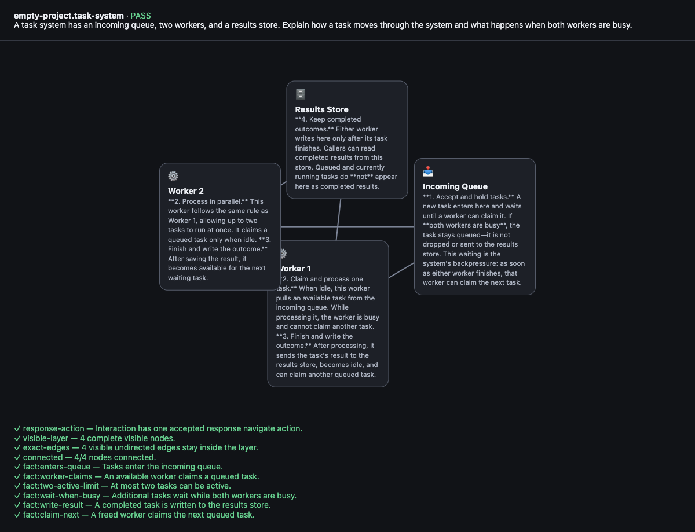
An evaluation execution is one harness configuration executing one harness-agnostic case through complete(inputGraph). The lower-level runner supplies synthetic product IDs. Relayer Eval uses real product IDs and persistence.
flowchart LR
ER["Eval runner creates temporary interaction"] --> HH["Persistent Node harness host"]
AS["Relayer app server creates product interaction"] --> HH
HH --> H["Same selected harness implementation"]
H --> C["Typed graph client"]
C --> G["Same Rust graph API and engine"]
G --> R["Resolved accepted layer"]
R --> CHECK["Deterministic checks and judge"]
R --> UX["Production product workspace"]
A run selects test-case IDs, harness-configuration names, and a judge configuration. The runner resolves configuration files at its boundary and expands the selections into executions. Each execution records its exact configuration snapshot and stable digest. It also records case, implementation, schema, client, judge, and component build versions.
packages/eval-runner/
cases/<case-id>.json # versioned project, thread, and turn definition
suites/<suite-id>.json # ordered case IDs and gates
judges/<judge-id>.json
~/.relayer/evals/
repositories/<source-id>.git # one cached public Git repository
objects/sha256/<digest> # immutable non-Git artifacts
runs/<run-id>/bundle.json # immutable experiment record
runs/<run-id>/graph.db # isolated accepted Rust graph store
runs/<run-id>/display.json # resolved layer used for product replay
runs/<run-id>/screenshots/ # rendered judge and human-review evidence
materialized/<run-id>/ # temporary copy-on-write checkout
The empty-project case needs no repository entry. Project cases reference a public repository URL, pinned commit, and expected tree digest; they never contain a developer-specific source directory. The initial project suite should use a real, permissively licensed project with roughly 10,000 to 40,000 lines of first-party source. The project should also have meaningful recent upstream activity. Selection records the upstream repository and activity evidence, while every evaluation remains pinned to one immutable commit. The project must install and verify locally without secrets or mandatory external services.
All local Relayer worktrees share the same user-level repository and object catalog. Each case × harness execution receives a clean private materialization of the pinned source. Result bundles live outside source checkouts. A runner must never reuse a mutated checkout across harness configurations.
A project case is a compact simulation of sustained work inside one repository, not a single isolated prompt. One initial case creates three sequential product threads against the same materialized project and project graph:
| Thread | Task shape | Mutation policy | Required evidence |
|---|---|---|---|
| Question | Understand an architecture, behavior, or request path | Read-only | Source-grounded answer, recursive layers, node details, and useful navigation |
| Diagnosis | Reproduce and explain a seeded defect without repairing it | Read-only | Reproduction, competing explanations, root-cause evidence, and zero repository diff |
| Implementation | Build or repair behavior and verify it | Writable | Diff, protected-file hashes, public and hidden checks, build results, and commits |
Each thread may contain multiple turns. An analytical follow-up may ask the harness to inspect more deeply, challenge its prior answer, or refine an accepted graph. A mutating follow-up that requires another commit must introduce a meaningful additional requirement. It must not reward an empty or cosmetic commit merely to satisfy turn count. The execution records each turn, repository state, commit boundary, and accepted graph independently. Earlier accepted turn displays remain immutable.
The catalog verifies every object digest before use and garbage-collects only unreferenced materializations and runs according to an explicit retention policy. Checked-in case/config/judge JSON stays small enough to review normally in pull requests.
Local commands are standardized target interfaces:
npm run eval -- --case empty-project.task-system.two-turn --configuration codex-basic
npm run eval -- --suite capability:memory --configuration codex-basic
npm run eval:compare -- --baseline codex-basic --candidate prime-production
npm run eval:web
eval:web opens the Relayer evaluation runner shown in Mock 10. It selects cases, named harness configurations, and a judge configuration; model settings belong inside the selected harness configuration. The web UI and CLI call the same runner service and produce the same execution records; the UI is not a separate evaluation implementation.
For each case the runner:
complete(inputGraph) through the Node host;Live commands require an explicit confirmation in the web runner or command flag plus an available credential reference and declared cost cap. They never run inside npm run check or the default test suite. CI may run them only in a separately authorized, budget-limited job. Closing the web page does not orphan a run: the local runner service retains status, cancellation, and the immutable partial failure record.
Deterministic checks always run first. The first empty-project case then uses only the six-fact structured judge defined in Section 15D.4. It does not require an operator agent, pairwise comparison, grounding rubric, repeat policy, or promotion threshold.
The first project suite adds one simulated-user judge. The judge opens the completed turn in the exact read-only production workspace, explores the response through visible controls, and grades what the product actually communicates. It does not substitute raw graph JSON, database records, or hidden node text for the rendered experience. Every qualitative rating is supported by screenshots captured during that review session.
Configuration comparison and blind pairwise judging are later evaluation-runner capabilities. When added, the judge model/version, prompt version, rubric version, repeat count, thresholds, and tie policy are recorded with the run. Human review in the real graph UX remains required before product promotion.
The simulated-user judge receives the original request, a versioned rubric, and the read-only production review window. It also receives six graph-review tools and read-only shell access to the immutable task artifact. Shell access exists to discover facts needed to apply the rubric; only the rendered graph can prove what the user experience communicates.
| Tool | Contract |
|---|---|
screenshot(target, mode, label) | Observe the current viewport or capture a visible element. mode = full captures a complete rendered element as native-scale tiles when necessary. |
interact(elementRef, activate?, value?) | Activate a visible control, or commission a separate scoped product operator to commit {text}, {selectedKey}, or {selectedKeys} through the ordinary input-draft HTTP surface. There is no sibling answer tool. |
history(delta) | Move backward or forward through review-session UI history using a positive or negative delta. |
reviewLayer(review) | Write or revise one screenshot-grounded layer assessment while the judge is exploring. |
reviewNode(review) | Write or revise one screenshot-grounded node assessment, including reviews of actions visible on that node. |
submitReview(review) | Write the overall turn assessment and finalize only after required layer and node coverage is complete. |
| Read-only shell | Inspect the task artifact with non-mutating Git, search, and file-reading commands. Network access, arbitrary non-review tools, and workspace mutation remain disabled. |
There is no scroll tool and no graph-specific openLayer or selectNode shortcut. A visible viewport capture preserves the actual first impression. A full-element capture exposes an entire node-detail panel without shrinking long content into one unreadable image; tall captures return ordered tiles under one screenshot ID. Element references permit interaction but are not rubric evidence.
The runner, not the judge, binds each screenshot to immutable state. This state includes execution, thread revision, turn, layer, selected node, activated action, navigation path, viewport, capture target, tile count, and content digest. A review cannot cite a screenshot whose recorded state does not match its claimed subject.
ReviewSession retains server-enforced read-only authority. Input answers and Send belong to a separately credentialed operator that the judge may commission only through interact. Each input action owns an independent advisory lock across versioned capture and persisted rating. This permits several same-node inputs to be captured before submission of the complete node review. The read-only product state exposes the selected thread's opaque input-draft revision as part of screenshot revision identity. Before commission, one durable receipt records the complete node rating, review revision, captures, and exact thread revisions. Commission of that capture set is atomic. The lock releases after its single capture-and-rate interval. Before completing, the ordinary product route must return the exact committed occurrence, action, value, and draft revision.
The rubric is a versioned manifest. Active recursive contract v6 uses human-experience rubric v11. Every layer uses the same criteria; the contract does not distinguish root and child layers. Node count is observable context, not a threshold. The judge decides from the rendered screenshot whether a layer is sparse, crowded, fragmented, balanced, or otherwise well organized. Historical v5/v10 records retain their original contracts and remain readable; the version bump deliberately breaks direct score comparability.
| Subject | Required criteria | Required screenshot context |
|---|---|---|
| Layer | Purpose clarity, cohesion, visual organization, relationship clarity, coverage | Visible layer viewport |
| Node | Layer fit, title-detail alignment, substance, detail presentation | Layer context plus selected-node detail; full-detail tiles when needed |
| Navigate action inside its source node review | Placement, label expectation, destination delivery, added value | Visible source and destination reached through that action |
| Invoke action inside its source node review | Placement, label expectation, apparent value | Visible source; invocation remains disabled in immutable review |
| Input action inside its source node review | Answerability, option-set quality, control fit | Visible source with the rendered prompt, control, and authored options; quality is rated before any answer is supplied |
| Turn | Answer quality, recursive coherence, navigation value, presentation quality, and follow-up progress when applicable | Representative evidence from completed layer, node, and action reviews |
Each criterion uses an ordered integer from 1 through 8, where higher is better. The integers intentionally have no canned meanings. The judge chooses a score from the criterion definition and observed graph, then records a criterion-specific reason and screenshot evidence explaining that exact judgment. Node actionDelivery may be null only when no destination is assessable. Node recursiveQuality may be null only when no expansion child exists. Turn follow_up_progress may be null when the request is not a follow-up. Every other occupied node, layer, and turn criterion requires a score.
polish is a separate node vector dimension for basic rendered integrity: clipping, readability, density, alignment, and control rendering. Polish provides no credit to content, action allocation, destination delivery, recursive quality, layer quality, turn quality, or task outcome.
The judge writes reviews as it explores. reviewLayer persists one finalized layer result after its nodes and expansion children have been reviewed.
reviewNode persists one node record and its sequential expand/reference/invoke/input/stop allocation decisions. The record also contains missing-action opportunities and visible actions. A missing input opportunity is recorded when the response needs user information or a user choice but authored no suitable input action.
Input-action quality is judged from the presented action before any operator may answer it. A text input has an intentionally empty option set; single- and multi-select inputs expose their complete authored choices. The v11 necessity counterweight penalizes questions whose answers already exist in the immutable task artifact. It also penalizes evading node-owned judgment and fragmenting one coherent decision into one question per node.
The combined judge/operator trace may contain only the scoped review MCP tools, including commissioned input commit and Send. File mutation, web search, and every out-of-scope MCP tool remain forbidden. Independence applies to the immutable input-action quality ratings produced before commission; it does not describe the later round-trip grounding observation.
Calling either tool again revises that subject's current record while preserving prior calls in the interaction trace. Applicable criterion keys come from the rubric manifest.
reviewNode({ layerId, nodeId, evidence, score, semantic, allocationSteps, missingActionOpportunities, actions, findings });
reviewLayer({ layerId, depth, nodeScores, nodeSemantics, criterionJudgments, materiallyMisleading, layerSummary, evidence });
submitReview({ turnId, rootLayerResult, evidence, criterionJudgments, summary, findings, scoreCeiling });
{
"nodeId": "node-22",
"layerId": "layer-8",
"evidence": {
"context": ["shot-16"],
"detail": ["shot-17"]
},
"score": {
"nodeId": "node-22",
"content": { "score": 6, "reason": "The visible explanation answers the main question but omits one important decision.", "evidence": ["shot-17"] },
"actionAllocation": { "score": 3, "reason": "A material inspect path is missing.", "evidence": ["shot-17"] },
"actionDelivery": { "score": null, "reason": "No destination action was authored.", "evidence": ["shot-17"] },
"recursiveQuality": { "score": null, "reason": "No expansion child exists.", "evidence": ["shot-17"] },
"polish": { "score": 7, "reason": "The node renders cleanly without clipping or broken controls.", "evidence": ["shot-17"] }
},
"allocationSteps": [{
"step": 0,
"ranking": [{ "choice": "expand", "rank": 1 }, { "choice": "reference", "rank": 2 }, { "choice": "invoke", "rank": 3 }, { "choice": "input", "rank": 4 }, { "choice": "stop", "rank": 5 }],
"preferredChoice": "expand",
"authoredChoice": "stop",
"authoredActionId": null,
"margin": "clearly_better",
"selectionFinding": "Expansion would expose a material decision that the visible node omits.",
"evidence": ["shot-17"]
}],
"missingActionOpportunities": [{
"allocationStep": 0,
"preferredChoice": "expand",
"importance": "material",
"unansweredQuestion": "Why was this implementation chosen?",
"expectedContribution": "Expose the decision and its tradeoffs.",
"artifactEvidence": ["src/implementation.ts:42"],
"evidence": ["shot-17"]
}],
"semantic": {
"nodeId": "node-22",
"meaning": "Implementation result",
"delivered": "The visible outcome",
"limitations": "The rationale is absent",
"effectOnLayer": "Useful but shallow",
"evidence": ["shot-17"]
},
"actions": [],
"findings": [
{
"type": "issue",
"severity": "material",
"text": "The graph stops where an implementation-rationale expansion would materially help.",
"evidence": ["shot-17"]
}
]
}
Each criterion requires its own reason; one generic rationale copied across criteria is invalid. Semantic summaries preserve what a node means, delivers, omits, and contributes to its layer. Specific strengths and problems remain screenshot-backed findings.
An expand action requires source and destination screenshots. The destination screenshot path must contain that action.
A reference review covers the source node, action, and destination-layer inclusion. It does not regrade destination nodes individually.
An invoke action stays inside its source-node review and uses only visible source evidence.
submitReview does not accept new layer or node assessments. It consumes the current root LayerResult, overall turn criterion judgments, representative screenshot references, summary, findings, and an explicit score ceiling. It finalizes the already persisted review set as one immutable judge result.
The review-writing tools reject unrelated evidence, unknown rubric keys, mismatched screenshot state, invalid nullability, incomplete action rankings, and missing recursive dependencies immediately.
submitReview lists missing subjects when coverage is incomplete. Expansion coverage includes every layer, node, visible action, and the overall turn.
Reference traversal processes each unique layer once and follows reference actions transitively. It does not activate inherited expand, invoke, or resolved-invoke actions.
The judge still grades those visible inherited actions in their reference context.
The final artifact preserves traces, screenshots, metadata, incremental reviews, rubric version, judge configuration, and completion coverage.
The opt-in node-input round-trip proof is separate from npm run check. Its mandatory gate is deterministic. A live model must author an accepted input action. The operator must commit and Send it into a new root with provenance-exact input children. The next candidate trace must contain the exact normalized semantic input snapshot in the harness prompt. A non-gating screenshot-grounded rating records whether the next visible answer materially uses the submitted value. One paired answered/unanswered run of the same pinned case calibrates that rating. The calibration records both executions and is not repeated as a default suite cost.
When the judge finds one material missing action, affected turn criteria and the overall presentation ceiling cannot exceed 6. Repeated material omissions or one critical omission cap them at 4. These are maximums, not assigned scores: the judge still chooses and explains the score warranted by the visible experience. Historical reviews retain their native scale when viewed alone; mixed-scale multi-turn projections normalize legacy scores proportionally before aggregation.
The simulated-user judge grades only what the product made visible. Separate deterministic graders remain authoritative for graph integrity, mutation policy, repository diff, protected-file hashes, public and hidden tests, build results, and commit history. A visually strong graph cannot compensate for broken code, and correct hidden work cannot compensate for an unusable visible response.
| Stage | Purpose | Execution | Gate |
|---|---|---|---|
| Deterministic product tests | Prove non-LLM choices, events, persistence, and contract validation | Fake Complete implementation; no paid inference | Required for every change |
| Basic Complete unit | Run the exact two-interaction case in Section 15D | empty-project.task-system.two-turn against codex.basic |
Required before larger evals |
| Capability evaluations | Test each required harness behavior independently | Small suites for interactions, reuse, actions, memory, grounding, topology, stop/retry | Required for affected capability |
| Hard-task benchmark | Compare output quality on longer, more complex work | Multi-case runs across pinned configurations | Required for promoted candidates |
| Simulated-user review | Grade every visible layer, node, and action through the production workspace | Screenshot-grounded agent review with enforced recursive coverage | Required for project-suite turns |
| UX replay and human grading | Determine whether outputs are understandable and useful in the real graph interface | Load saved bundles into the desktop app | Required before production promotion |
Every harness-facing product requirement must have an evaluation case:
| Capability | Minimal evaluation assertion |
|---|---|
| Message response | Accepted result answers the interaction and opens a coherent first layer |
| Existing-node reuse | Relevant prior concept is referenced or updated instead of duplicated |
| Attached context | Attached node and user annotation materially affect the answer |
| Node action | Invoking action yields the promised child response and preserves target linkage |
| Correction through context | A node attached with a corrective annotation materially affects an ordinary message without unrelated graph churn |
| Multiple-turn memory | Later response correctly uses prior graph memory and turn lineage |
| Grounding | Claims that depend on files are traceable to the pinned source commit |
| Transitive grounding | Semantic node can inherit support through explicit grounded relationships |
| Topology | Node count, semantic grouping, and connections are understandable in the renderer |
| Authored details/actions | Visible nodes contain useful detail; actions are valid and specific |
| Project question | Answer is grounded in the pinned project while the read-only workspace remains unchanged |
| Project diagnosis | Harness reproduces and explains the seeded failure, considers alternatives, and leaves zero repository diff |
| Project implementation | Requested behavior works under public and hidden checks; protected files, diff scope, build, and commits pass their deterministic gates |
| Stop and retry | Stop preserves accepted memory; retry reuses the same interaction identity |
| Recursive work | Internal subagent work contributes to one accepted Complete result |
| Failure recovery | Tool/validation feedback leads to repair or an explicit retryable failure |
Every evaluation run saves:
type CompleteEvaluationBundle = {
bundleSchemaVersion: string;
testRunId: string;
testCaseId: string;
caseDigest: string;
source?: { repositoryUrl: string; commit: string; treeDigest: string };
harnessConfigurationName: string;
harnessConfiguration: HarnessConfiguration;
harnessConfigurationDigest: string;
harness: { implementation: string; version: string; buildDigest: string };
graphSchemaVersion: string;
graphClientVersions: { typescript: string; python: string };
stepResults: Array<{
stepId: string;
threadId: string;
turnIndex: number;
nodeId: number;
result: CompleteResult;
display: ResolvedGraphLayer;
repositoryState?: { before: string; after: string; commits: string[] };
deterministicChecks: CheckResult[];
judgeResults: JudgeResult[];
}>;
simulatedUserReview?: {
rubricVersion: string;
interactionTraceRef: string;
screenshotRefs: string[];
assessments: ReviewRecord[];
coverage: ReviewCoverage;
};
inputGraph: CompleteInputGraph;
judgeConfigurationId: string;
diagnosticTraceRef?: string;
timing: { startedAt: string; completedAt: string; durationMs: number };
cost?: { currency: "USD"; amount: number };
};
The bundle is immutable evidence. Continuing to chat must never modify it; interactive use clones its accepted graph and pinned configuration into a new product thread.
In the first milestone, promotion means selecting the exact passing named harness configuration and verifying its recorded snapshot, digest, implementation key/version, and component build digests. Signing and distributing a production configuration catalog is deferred until the product needs that release boundary.
Release checks verify:
User goal: Judge a pinned harness with repeatable evidence.
Product rule: Versioned evaluations produce immutable results and replay data.
Observable result: Relayer Eval opens the execution in the production product workspace.
Acceptance: Promotion requires deterministic task checks, screenshot-grounded simulated-user review, and human visual review.
Relayer Eval is a separate internal Electron application and local profile. It owns cases, harness configurations, judges, execution state, scores, and aggregate results.
Each case and harness execution creates ordinary product projects, threads, interactions, and accepted graph output through the Relayer app server.
Each completed execution exposes three actions:
Product workspace opens the production renderer with server-enforced read-only authority. It does not translate the graph into a second evaluation view.
The review workspace uses normal product behavior:
A project evaluation may run several threads and turns against one pinned repository materialization. After each accepted turn, the configured simulated-user judge opens the same read-only production workspace a person reviews. It navigates visible nodes and actions and captures the screenshots it needs. It then fills the literal rubric in Section 13.4 and saves its exploration trace with the immutable run.
The judge may change only review presentation state: visible selection, navigation history, and screenshot target. It cannot send a message, invoke mutating actions, change project files, alter graph records, or modify the source run. Human reviewers can open the same execution and inspect the exact screenshots cited by each finding.
Each available candidate trace has a versioned manifest, ordered events, achieved coverage, byte length, digest, and artifact reference. The trace excludes graph credentials and secrets.
Trace capture failure does not rewrite the product execution. It marks the execution non-promotable and preserves the explicit capture error.
V1 uses an Electron shell. Relayer distributes macOS outside the Mac App Store and targets Windows x64 directly. Desktop packages the renderer, Rust services, harness host, graph clients, and updater.
Electron's macOS distribution guidance requires code signing and Apple notarization for normal distribution, and its automatic updater requires a signed macOS app. V1 treats those as release gates, not optional polish.
The repository builds host-target development packages and uses a fail-closed release contract. CI produces signed macOS Preview artifacts. Protected workflows promote exact target-specific bytes to Stable.
Protected tag workflows published immutable versions 0.2.2, 0.2.3, and 0.2.4, followed by target-aware macOS candidates through 0.2.13. Narrow AWS OIDC roles controlled publication. Checks verified the public artifacts, metadata, hashes, source commits, Gatekeeper acceptance, and notarization tickets.
A remote Mac completed the in-app update through 0.2.4. The update kept its Codex connection, Preview choice, and Light appearance. Protected workflow 32105585844 promoted the exact 0.2.4 Preview bytes to Stable. The installed app then used the live Stable feed.
Windows blocked The Windows candidate job is disabled. The required RELAYER_WINDOWS_PUBLISHER_NAME variable is missing. Azure Artifact Signing and the interactive Windows 11 AVD canary are not verified. The disabled Windows job does not block macOS Preview publication.
Intel Stable verified Versions 0.2.8 and 0.2.9 proved Intel packaging and publication, but their unsigned DMG containers cannot be promoted. Signed-DMG versions 0.2.10 and 0.2.11 provided the bootstrap and target. Native Intel workflow 32350071508 completed the visible update, restart, signature, Gatekeeper, exact-byte, trace, and screenshot gates. Protected workflow 32372106406 promoted the exact 0.2.11 Preview bytes. Live Intel Stable and Preview manifests are byte-identical.
Apple Silicon Stable verified Native workflow 32399053432 updated signed 0.2.10 to 0.2.11. Protected workflow 32399976404 promoted the exact bytes to Stable.
Version 0.2.12 Stable verified Native workflows 32443697093 and 32443698408 updated both macOS targets from signed 0.2.11 to 0.2.12. Protected workflows 32444315112 and 32444318263 promoted the exact target-specific bytes.
Version 0.2.13 Stable verified Native workflows 32534359978 and 32534361604 updated both macOS targets from signed 0.2.12 to 0.2.13. Protected workflows 32535131928 and 32535133480 promoted the exact target-specific bytes.
Three release checks remain open. They are the macOS support matrix, corrupt hosted artifacts, and restart deferral during an active Complete call. The app server has an initial SQLite schema and fail-closed validation. A later-version migration and forced-failure recovery test remain open.
The packaged Codex harness, graph tools, Complete path, and production renderer have deterministic product proof. Prime Agent remains partial until a clean install can load and run its package.
| Mode | Command contract | Artifact and use | Required checks |
|---|---|---|---|
| Renderer/server development | npm run desktop:dev |
Electron loads the local development renderer and starts the app server from source | Fast unit/integration checks and isolated data directory |
| Local packaged test | npm run desktop:pack |
Unsigned host-target Relayer development package | Packaged startup, file inventory, bundle metadata, icon, and isolated-profile screenshot |
| Signed Preview | npm run desktop:dist:preview |
Target-specific signed candidate; a matching protected desktop tag separately publishes it to Preview | Candidate contract, Preview publication receipt, clean-user install, Gatekeeper, visible updater states, and Preview N-1 to N smoke |
| Stable promotion | Protected promotion workflow | The exact target-specific Preview bytes move to Stable without rebuilding | Committed target canary, immutable receipt, hosted-byte verification, and conditional pointer change |
Unsigned artifacts are never uploaded or presented as distributable builds. Release mode fails closed when signing identity, notarization credentials, update signing, or required bundled-runtime inputs are missing.
The build produces an inventory manifest and verifies that the .app contains:
Startup uses an app-owned data directory and a per-launch loopback port/token. The Electron main process owns app-server startup, health, cancellation, shutdown, deep-link routing, and update installation barriers.
flowchart LR
S["Clean tagged source"] --> T["Install locked dependencies"]
T --> B["Build renderer, server, engine, runtime bundle"]
B --> U["Unit, integration, and packaged E2E"]
U --> P["Package target app and update artifacts"]
P --> C["Sign nested code and app with Developer ID"]
C --> N["Apple notarization and stapling"]
N --> V["Verify signatures, Gatekeeper, contents, hashes"]
V --> Q["Candidate clean-machine smoke"]
Q --> R["Publish immutable artifacts and checksums"]
R --> M["Publish stable update manifest last"]
V1 targets Apple Silicon and Intel on macOS 13.3 or newer, plus Windows x64. Each target has independent artifacts, Preview and Stable pointers, and target-specific canary evidence.
macOS distribution uses a notarized DMG for first install and a signed ZIP plus channel metadata for Electron updates. Windows x64 will use a signed NSIS installer once signing is unblocked. Artifacts are content-addressed and immutable. A mutable channel manifest is published only after its target-specific artifact, signature, checksum, platform trust proof, and smoke evidence are available.
Before promotion, a clean machine must pass these product checks:
| Verification surface | Owning package | Required proof |
|---|---|---|
| Projects, threads, providers, worktrees, persistence, updater, and graph renderer | Rust Relayer app server plus Electron Desktop | Deterministic unit/integration tests plus packaged desktop smoke |
| Rust graph core, local API, token authority, migrations, and resolved layers | Graph engine crates | Rust unit/property/transaction tests and server integration tests |
| TypeScript and Python graph clients | Graph client packages | Shared cross-language conformance fixtures against the Rust server |
| Node harness host, session reuse, and supported harness implementations | Harness-host and harness implementation packages | Fake-provider lifecycle tests plus opt-in live Complete evals |
| Eval runner, review workspace, judge evidence, and candidate traces | Relayer Eval plus the shared product app server and renderer | Runner lifecycle, server-enforced read-only review, screenshots, traces, and product-workspace E2E |
| Bundled Relayer Desktop distribution | Desktop release inventory | Cross-component compatibility test, signed package smoke, and exact version/build inventory |
The default suite uses a fake or replay Complete implementation. It covers:
Live Codex, Prime Agent, or other model runs are opt-in, metered, and never part of the default npm run check. They run through the evaluation runner and produce immutable bundles. LLM judges are versioned and calibrated against human decisions; their scores are not treated as ground truth. Simulated-user judge runs record their complete UI interaction trace and screenshot evidence so a human can audit every qualitative finding.
Human reviewers load saved results in the desktop graph UX. They judge response clarity, important details, connections, actions, and task continuation. They do not judge raw JSON or traces. Later comparisons use one case and change only the recorded harness or model configuration.
codex.basic configurations, and explicit compatibility for each supported provider and harness;complete(inputGraph); live app-server adoption of that exported seam does not yet have product proof.V1 is acceptable only when all requirements in this section are met.
empty-project.task-system.two-turn through codex.basic.